Bir zamanlar Mısır'da yaşananlarla ilgili bir diğer sırlar yumağı da, mimari yapılarında kendisini gizlemektedir. Amerika Kıtası'ndan Asya Kıtası'na kadar Dünya'nın birçok bölgesinde rastlanan piramitlerin içinde en fazla ilgi uyandıranları Mısır'daki piramitler olmuştur. Bu nedenle de, Mısır deyince kuşkusuz ki, ilk akla gelen konuların başında, o devasa piramitler gelir...
Bu gizemli yapıları gerçekten de alnından ter damlayan ve kırbaç altında zorla çalıştırılan binlerce köle mi inşa etmiştir? Tek parça tonlarca ağırlığındaki dev taş blokları sadece kas kuvvetiyle mi üst üste yerleştirildiler?!...
Bu nasıl bir kas kuvvetıydi?!...
İşte akılları karıştırmaya başlayan ilk sorular bunlardı... Ancak konu üzerinde araştınnalar sürdürüldükçe kafaları karıştıracak daha pekçok sorunun daha ortaya çıkmakta gecikmediği görüldü...
Öncelikle, bilinen insanlık tarihinin bize sunduğu verilerle, Mısırlılar'ın bu devasa yapıları hangi teknolojiyle yaptıkları sorusuna mantıklı bir cevap verilemeyeceği kesin olarak anlaşılmıştı...
Cevap: "İnsanlığın Ezoterik Tarihi"nde gizliydi...
Keops, Kefren ve Mikerinos...
Gerçekte bu üç büyük piramit Tufan Öncesi teknolojisi kullanılarak Osiris Rahipleri'nin gözetiminde inşa edilmiştir. Bir zamanlar Büyük Piramid de dahil olmak üzere, Mısır'daki tüm piramitlerin anıt mezar olarak ya|Jildığı görüşü günümüzde geçerliliğini yitirmiş durumdadır. Tufan Oncesi'nde yapılmış olan ilk üçüne (Keops, Kelven ve Mikerinos) kıyasla çok daha küçük ve basit, adeta birer taklit niteliğinde olan ve Tufan'dan çok daha sonraki dönemlere ait diğer piramitlerin yegane işlevi firavun mezarı olmalarıdır. Anak diğerleri için durum çok farklıydı...
Konuyu açalım...
İlk önce, bu ünlü piramidin boyutlarıyla ilgili verileri hatırlayalım... Keops'la ilgili bulgular, bu piramidin çok özel bir yapı olduğunu ve bulunduğu noktaya özellikle yerleştirilmiş olduğunu gösteriyor. Temelinin her bir köşesi 51 derece, 51 dakika, 14 saniyedir.
Pi Sayısı:Temel çevresinin yüksekliğine oranı Pi sayısının iki katma eşittir: 2 X 3.1415. ,
Piramit Kübiti: Bu eserin yapımmda kullanılan temel ölçüm birimi 636.66 ram'ye denk gelen "Piramit Kübiti"dir.
Dünyanın merkezinden Kutba uzatılan yarı çap: Dünyanın merkezinden Kutba uzatılan yarıçap 6357 km'dİr Bu da "Piramit Kübiti"nin 10 milyon katına eşittir.
Dünya ile Güneş arasındaki mesafe: Dünya ile Güneş arasındaki mesafe ortalama 149.5 milyon kilometredir. Piramidin yüksekliğinin ise tahmini olarak 147- 149 metredir. Tahmin ediliyor dememizin sebebi (epe noktasının zaman içinde erozyano uğramış olmasından dolayı bu gün için kırık olmasıdır. Bu oranlara baktığımızda, piramidin yüksekliğinin 1 milyarla çarpımının dünyamızın Güneşe olan uzaklığını vermekte olduğu görülmektedir.
Güneş Yılı'nın Günleri: Piramidin temel kenarının uzunluğu 365.25 "Piramit Kiihiti"dir. Bu da, Dünya'nın Güneş Yılı'nın gün sayışma eşittir. Az sonra Mısır Takvimi'yle ilgili konuyu işlerken göreceğiniz gibi, bu aynı zamanda bir kehanet niteliği de taşır. Biz elimizdeki verileri hatırlamaya devam edelim...
Dunya Gezegeni'nin Simgesi: Peter Lemesurier "The Great Pyramid Decoded" (Büyük Pramit'in Şifresi Çözüldü) İsimli kitabmda şöyle diyordu: "Dünya gezegenini simgeleyecek bir mimari bir yapı aranacak olsa, Gize Büyük Piramiti'nden daha iyisi bulunamaz."
Depremlere dayanıklılığı
Büyük Piramit çok sağlam bir kaya yatağının üzerine inşa edilmiştir. Hem bu nedenle, hem de geometrik şeklinden dolayı, çok şiddetli depremlerden bile etkilenmesi mümkün değildir. Binlerce yıldır ayakta kalması da zaten bunun en büyük kanıtıdır, Tonlarca ağırlığındaki Piramit ve Kireç Taşı blokları Yapımında yaklaşık 2.600.000 blok granit ve kireçtaşı kullanılmıştır. Bu taş bloklarının her birinin ağırlığı 2 tondan 70 lona kadar değişmektedir. Milimetrelik bir orandaki titizlikle özel boyutlarda kesilen tüm bu bloklar, birbirleri ile o denli hassa bir şekilde birleştirilmişlerdir ki, bloklar arasından saç teli bile geçemeyecek derecede, hiçbir boşluk bırakılmamıştır. Bu birleştirilme işleminde harç kullanılmamıştır. Yüzeylerindeki çıkıntıları basamak gibi kullanarak yaklaşık yarım saatte piramidin tepesine tırmanmak mümkün olabilmektedir İlk yapıldığında üzeri cilalanmış kireçtaşı levhaları ile kaplıydı. Dolayısıyla yüzeyi bugünkü gibi basamaklı değil, dümdüzdü. Hem depremler, hem de insanoğlunun tahripkâr davranışları nedeniyle, bu tabaka artık tümüyle yok olmuştur. Tabii yaşanılan büyük Tufan'ın etkilerini de buna ilâve etmek gerekir. Kireçtaşı levhalarının ne yazık ki çoğu, daha sonraları Kahire'deki inşaatlarda kullanılmıştır!...
Keops'un Yapılış tarihi için "Tarihi Kayıtlar" ne diyor? Günümüze kadar gelebilen Tarihi Kayıtlar'da piramitlerle ilgili çok önemli bilgiler bulunmaktadır. Bu bilgiler aynı zamanda "Mısır'ın Bilinmeyen Geçmişi" ile ilgili önemli ipuçlarını da içlerinde barındırır...
Bunlardan bir kısmını alt alta sıralayalım:
Arap Tarihçisi Abu Zeyd el Balkhy
Abu Zeyd el Balkhy, eski bir yazılı kaynağa dayanarak, "Büyük Piramid'in Çalgı Takımyıldızı Yengeç Burcu'ndayken yani Hicret'ten 2 kere 36.000 yıl önce inşa edildiğini" yazar. Muhyiddin-i Arabi Mısır Ülkesi'ndeki piramitlerden sözederken, "Bu piramitler Nesr, Esed Burcu'ndayken bina edilmiştir. Nesr, şu anda Cedi Burcu'ndadır." demektedir. Nesr Çalgı Takımyıldızı'nın en parlak yıldızı Vega'dır. Esed Burcu günümüzde Aslan Burcu; Cedi Burcu ise, Oğlak Burcu olarak isimlendirilmektedir. Dünyamızın astrolojik çağlan ile ilgili arka sayfadaki tabloyla bu verileri karşılaştırdığımızda, Aslan Burcu'nun bizim devremizin başlangıcını ve aynı zamanda da yaşanılan son "Tufan"ı gösterdiği çok açık olarak ortaya çıkmaktadır.
Bir başka Arap Tarihçi İbn-i Abd-Hükm
Arap Tarihçisi İbn-i Abd-Hükm de Piramitler'in yapılış tarihi olarak "Tufan Öncesi"ni gösterir. Arap tarihçiye göre piramitlerin yapılış tarihi: "Tufan'dan 300 yıl öncesine dayanmaktadır.
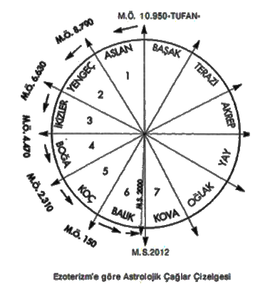
"İbn-i Abd-Hükm piramitlerin yapılış nedenlerini ise özetle şöyle anlatır:
Mısır Kralı Surid İbn-i Salhuk rüyasında dünyanın ekseninden oynadığını, yıldızların o yana bu yana kaçıştığını ve insanların tüm bu olgulara eşlik eden korkunç sesin etkisiyle korku içinde olduklarını görür. Uyanınca bütün rahiplerini toplar. Onlara gördüğü korkunç rüyayı anlatır. Rahipler astrolojik ve astronomik hesapları da inceleyerek yaklaşmakta olan Tufan'ı haber verirler ve krallığı yok edecek iklim değişikliklerini anlatırlar. Önlerinde birkaç yıllık vakit vardır. Bu süre zarfında kral, danışmanları yardımıyla içlerinde kubbeler bulunan piramitler yaptırır. Piramitlere muskalar, esrarlı hazineler, paralar, kıymetli taşlardan yapılmış muhafaza kutuları, çeşitli aletler, çatlamayan tekneler ve bükülebilen ama kırılmayan cam eşya yerleştirilir. İbn-i Abd-Hükm'ün piramitlerin yapılış nedenleri ile ilgili bu aktardıkları birçok bakımdan önemli bilgiler içermektedir. Bunları maddeler halinde sıralayacak olursak şöyle özetleyebiliriz:
1- Tufan'ın dünya eksenindeki kayma ile bağlantılı olması.
2- Bu yaklaşan büyük doğal afetin hem rüya kanalıyla hem de rahiplerin astrolojik ve astronomik hesaplamalanyla önceden anlaşıhnası. Hatta zamanının belirlenmiş olması.
3- Piramidin yapılış nedenlerinin başında Tufan'ın yaklaşmakla olması.
Görüldüğü gibi bu tarihi kayıtta da piramitlerin yapılış tarihi olarak Tufan öncesi gösterilmektedir Bu anlatılanlara baktığımızda piramitlerin yapılış nedeni olarak, Tufan'dan korunma amacı da güdüldüğü anlaşılmaktadır. Çünkü pekçok değerli eşya bu yapıların içlerine muhafaza edilmişti. Piramitlerin Tufan'dan korunmak için yapıldığı ile ilgili başka tarihi kayıtlar da vardır:
İbn-i Batuta
14. Yüzyıl'ın ünlü Arap alimi İbn-i Batuta: "Piramitlerin Tufan boyunca sanat ve bilimi ve diğer bilginleri korumak için inşa edildiğini" yazar. Aynı anlatıma yine 14. Yüzyıl'a ait Firazabadi Lügati'nda da rastlanır.
Ünlü Tarihçi Heredot
Yunanlı Tarihçi Heredot da ilk üç piramidin ve Sfenks'in Tufan Oncesi'nde yapıldığını doğrulamaktadır. Mısırlı rahipler Heredot'a, bu piramitlerin Tufan'dan önce Mısır'ı yöneten firavun Surid döneminde, Hermes (Thot) rahiplerinin "Kutsal Sırlar"nı daha sonraki nesillere ulaştırmak amacıyla inşa ettiklerini ve aradan 341 nesil geçtiğini söylemişlerdir.
Mısır Kıpti Tarihçisi Mesudi
Orta Çağ'da yaşamış Mısır Kıpti tarihçisi Mesudi de, Arap Tarihçisi İbn-i Abd-Hükm'ün aktardıklarını doğrularcasına Büyük Piramid'in Surid isimli bir kral tarafından yaptırıldığını aktarmıştır. Bu kayıtlara göre Surid, Tufan'dan 300 yıl önce yaşamıştır. Nasıl olduğu bilinmeyen bir biçimde kral, Aslan Takım-yıldızı'yla ilgili bir felâket hakkında önceden uyarılır. Piramidi yaptırma nedeni de buna dayanın Yaklaşan büyük felâketten eskinin anısını koruyabilecek bir anıt yapmak... İşte bu düşünceyle Büyük Piramidi inşa ettirir. Piramidin dış cephesi, duvar ve tavanları astronomi, matematik ve tıp alanında bilgilerle donatılır. Bu bilgilerin arasında gizemli varlıklarla ilgili bilgilerin de kaydedildiği ifade edilmektedir. Eskinin anısı ile ilgili tarihi bilgiler de, bu piramidin gizli bölümlerine yerleştirilir. (Edgar Cayce'nin Atiantisle ilgili gelecekte bulunacağını iddia ettiği önemli bilgiler işte bunlardır.) Ancak ne yazık ki. Piramidin dış cephesi ve duvarlarındaki bu yazıtların büyük bir bölümü günümüze kadar gelememiş ve gizli tarihe ilişkin bilgiler de şu ana kadar bulunamamıştır.
Bu kayıtları doğrulayan başka tarihi belgeler de vardır.
Örneğin Herodot kendi devrinde piramitlerin üzerinde bazı yazmalara rastladığını kaydetmiştir. 12. Yüzyıl tarihçilerinden Abd-Ül-Latif, piramitlerin dışındaki yazıtların 10.000 sayfa dolduracak kadar çok olduğundan söz eder. Bunun haricinde o dönemden kalan bir papirüste yazılanlar da, tüm bu tarihi kayıtları destekler niteliktedir. Abu Hormenies mabedinde bulunan Kıpti Papirüsü'nde şöyle bir pasaj vardır:
"Piramitler işte böyle yapıldı. Duvarlara astronomi, fizik ve diğer yararlı bilgilerin sırları yazıldı. Dilimizi okuyabilen herkes bunları anlayabilsin diye."
Doğu Ezoterizmi'nde de Mısır Piramitleriyle ilgili benzer bilgilerle karşılaşmaktayız.
1900'lü yılların ilk çeyreğinde Tibet'e giderek, Himalayaların gizli mabetlerinde inisiye edilen İngiliz Teozofist A.P. Sinnett, daha sonra burada edindiği sırların bir kısmını Batı dünyasına duyurmuştur. Himalayalı bir Üstad'ın müridi olduğu bilinen İngiliz Teozofist A.P. Sinnett, 1920 yılında Londra'da yayınladığı "Okült Öğretinin Derlenmiş Meyvaları" isimli kitabında Büyük Piramit hakkında yukarıda aktardığımız belgelere benzer bilgilere yer vermiştir:
Keşfedilen üç oda haricinde kesinlikle başka odaları da bulunan Büyük Piramit , başlangıçtan beri muhakkak ki, bir inisiyasyon mabedi ya da mekânı olarak tasarlanmış ve kullanılmış olmasına rağmen, Okült Gizemlerle ilgili olan ve büyük bir önem taşıyan bazı fiziki objelerin korunnasına yönelik bir amaca da hizmet ediyordu. Denildiğine göre bu objeler kayalık zeminin içine gömülmüş ve Piramit de bunların üzerine inşa edilmiştir. Piramit'in formu ve büyüklüğü, onu deprem felaketlerinden ve hatta yeryüzünde periyodik olarak meydana gelen büyük hareketler sırasında sular altına kalmaktan koruyacak şekilde; düşünülmüşlür.
Büyük Piramit yüzyıllarca kapalı bir kulu olarak kalmış ve bu devasa yapının içine açılan giriş kapılarına bir türlü ulaşılamamıştı... Bu nedenle piramidi sadece dışarıdan seyretmekle yetinilebilmişti. Tarihi kayıtlara göre Piramide girmeye çalışan ilk kişiye M.S 820 yılında rastlıyoruz. Harun-u Reşid'in oğlu olan Halife Abdullah Al-Mamun, piramidin içinde muazzam hazinelerin saklı olduğunu duyduğunda, bu gizemli yapıya girmeyi kafasma koymuştu. Yanına aldığı dönemin mühendis, mimar ve inşaatçılarıyla birlikte, günlerce bir giriş aradı durdu... Bulamayınca da, doğrudan yapının taş kütlesi üzerinde bir delik açmaya karar verdi. Ne var ki, çekiç ve balyozlarla bu işin yapılamayacağını kısa bir süre içinde anladı. Ellerindeki malzemeler piramidin dış yüzeyinde bir delik açmaya müsait değildi...
Mücadeleyi bırakmamaya kararlı olan halife, adamlarına taşları kızgınlaşana kadar ısıtmaları ve sonra da üzerlerine soğuk sirke dökerek çatlatmaları için emir verdi. Çok uzun ve yorucu çalışmalar sonucunda, bu yöntemle ancak 30 metrelik ufak bir tünel açabilmişlerdi. Ancak piramidin duvarları bitecek gibi görünmüyordu!...
Bu yorucu ve verimsiz çabadan tam vazgeçiyordu ki, adamlarından biri, kayalardan birinden kopan küçük bir taş parçanın aşağıya düşüp çıkarttığı sesi işitti. Demek ki taşın düştüğü yerde bir boşluk vardı, lekrar gayretlendiler, sonunda 1 metre yüksekliğinde 90 cm genişliğinde olan bir geçide vardılar. Burası 26 derecelik bir eğimle önce Piramid'in taş yapısı içinden, sonra da altındaki kaya zeminin içinden aşağıya doğru inen bir geçitti. Araplar aşağıya doğru eğimli olan bu geçidin ters istikametinde yukarıya doğru zorlukla ilerleyerek, sonunda "Gizli Girişi" keşfettiler. Daha sonra da aynı tünelden aşağıya doğru inip, piramidin en dibindeki "Yeraltı Odası"na ulaştılar. Bu odada hiçbir şeye rastlamadılar. Oda boştu!...
Odanın en dibinde daracık bir tünel bulunuyordu. Tünele girdiler ama burası 15 metre ileride kör bir duvarla bitiyordu. "Yeraltı 0Odası"nın zemininde bir de dimdik aşağıya inen bir kuyu bulunmaktaydı. Ancak kuyu 9 metre derinliğe kadar inip burada bitiyordu...
Al-Mamun'un adamları daha sonra geriye döndüler ve "Geçit"e düşen taşı buldular. Bu taşın, kırmızı granitten olan bir başka taşın önünü örttüğünü farkettiier. Bu iri granit yukarıya doğru çıkan ikinci bir geçidin önünde tıkaç vazifesi görüyordu. Uzun çabalardan sonra bu tünele girmeyi başardılar Tünelin içinde ilerlemeye başladılar Bir süre sonra yolları yine granitten yapılmış iki tıkaçla kesildi. Granitten yapılma bu tıkaçları aşmak oldukça zor oluyordu...
Günler süren yoğun uğraştan sonra granit tıkaçlardan birini bulunduğu yerden sökmeyi başardılar Karşılarına çıkan tünelden ilerleyip basık tavanlı ve yine 26 derecelik bir eğim yapan bir başka "Çıkış Geçidi"ne vardılar. Dizleri üzerinde süranerek 45 metrelik bir mesafe boyunca kaygan taşların üzerinde ilerleyip yatay bir tünele girdiler. Bu tünelin sonunda ise yine bomboş bir odada kendilerini buldular. Burası her bir kenarı 5.5 metre olan kare biçiminde bir odaydı. Araplar kadınları eğik tavanlı mezarlara gömdükleri için, buraya "Kraliçe Odası" adını verdiler. Kraliçe Odası ismini verdikleri bu mekân piramidin tepe noktasının tam altında yer almaktaydı. Düzgün döşeme taşlarından yoksun kaba bir zemine sahipti.
Arapların yine elleri boş kalmıştı!...
Aradıkları hazine ortalarda görünmüyordu!...
Geriye dönmek için meşalelerini yola doğru uzattıklarında başlarının üzerinde bir boşluğun yer aklığını farkettiler. Birbirlerine omuz vererek buraya tırmandılar. Dar ama yüksek tavanlı olan bir odaya çıkmışlardı. Odanın hemen yanında aynen "Çıkış Geçidi"ne benzer bir eğimde yukarıya doğru devam eden bir tünel bulunuyordu. Tünelin tavanı oldukça yüksekti. Diğer tünellerden farklı olan bu geçidin uzunluğu 47 metre, yüksekliği ise 8.5 metreydi. Galerinin sonunda yüksek bir basamaktan geçilerek alçak tavanlı bir "Ön Odaya" oradan da duvarları, tavanı ve tabanı cilalanmış kırmızı granitten yapılmış büyük bir odaya girdiler. Bir önceki odaya "Kraliçe Odası" adını verdikleri için buraya da "Kral Odası" adını verdiler. Odanın uzunluğu 10 metre, genişliği 5 metre ve yüksekliği de 5.5 metreydi. Al-Mamun'un ve adamlarının aradıkları paha biçilmez hazinelerdi ama bula bula bu odada hazine yerine iyi cilalanmış, koyu kahverenginde granitten yapılma boş bir "Lahit" buldular!... Daha doğrusu bunu lahit zannettikleri için böyle isimlendirmişlerdi...
Görünüşü gerçekten de bir lahiti andırıyordu ama bu lahit, ölen birisi için değil, inisiyelerin ölüm ötesi deneyimlerini gerçekleştirirken kullanmaları için yapılmıştı. Al-Mamun, rüyalarını süsleyen hazinesine kavuşamamıştı ama kararlılığı ve becerikliliği sayesinde Piramide girilmiş ve geçitleriyle bazı odalarına ulaşılabilmişti. Görüldüğü gibi piramidin içindeki odalara verilen isimler Araplar'a aittir ve bugün de bu isimler kullanılmaktadır. Kullanılan isimlerin bu odaların işlevleriyle ilgili hiç bir dayanağı yoktur. Araplar'in o anki kendi anlayışları çerçevesinde verdikleri isimlerden ibarettir.
450 yıl sonra...
1270 yılı civarında Büyük Piramit büyük depremlere maruz kaldı. Tutulan tarihi kayıtlardan öğrendiğimiz kadarıyla, Al-Mamun'dan sonra yüzyıllarca Piramide girme teşebbüsünde bulunan herhangi bir kimse çıkmamıştır... Bunun en önemli nedeni. Büyük Piramid'in pek tekin bir yer olmadığına dair bir inancın yayılmış olmasıydı. Bu yıllarda Abdul Latif isimli Bağdatlı bir bilim adamı Piramide girmeye karar vermiş ancak tam buna teşebbüs edeceği sırada bayılıp kalmıştı. Bu bayılma olayı Büyük Piramit'in üzerindeki tekinsizlik inancının daha da artmasına neden olmuştu. Sonuç olarak 1638 yılına kadar Piramit'in bilinen başka bir ziyaretçisinin olmadığı görülmektedir.
Bu tarihte İngiliz Astronom ve Metamatikçisi John Greaves, Büyük Piramit'e ilk adım atan bilimadamı oldu. Amacı, Piramidin içinde olabileceğini düşündüğü bir takım astronomik kayıtlara ulaşmaktı. "Kral Odası"na vardığında o da bir zamanlar Al-Mamun'un adamlarının olduğu gibi, sadece boş bir lahitle karşılaştı. Böylesine devasa bir yapı sadece bu lahidi örtmek üzere inşa edilmiş olamazdı... Ama görünüşte bundan başka bir açıklama da getirilemiyordu...
Bu çelişki onu bir hayli düşündürmüştü... Aradığını o da bulamamıştı ama araştırması sırasında Piramit'in içinde Al-Mamun'un adamlarının bulamadığı yeni bir bölüm keşfetti. "Büyük Galeri"nin rampası üzerinde rastladığı bir taş bloğu kaldırınca, doğrudan Piramit'in derinliklerine inen kuyuya benzeyen dik bir tünel buldu. 90 cm genişliğindeki bu tünelin duvarlarına, basamak gibi kullanılabilecek küçük çıkıntılar yapılmıştı. Bunlara basa basa 18 metre derinliğe kadar indi. Burada tünel küçük bir oda şeklinde genişliyordu. Bugün buraya "Mağara" denilmektedir. John Greaves Piramit'in boyutlarını da tespit etmeye çalıştı ve bunun bir matematik mucizesi olduğunu ilk o farketti. Elde ettiği ölçümlerle o devrin ünlü bilim adamı Sir Isaac Newton da yakından ilgilendi ve bu konuda Newton, bu yapının sıradan bir yapı olmadığıyla ilgili bir de tez hazırladı. Sonraki yıllarda bilim adamlarının Büyük Piramit'e daha fazla ilgi göstermeye başladığını görüyoruz. Her yapılan araştırma yeni bulguları beraberinde getiriyordu. Böylelikle Piramitle ilgili mevcut bilgilere sürekli yenileri eklenmeye başlanmıştı. Ama bütün bu araştırmalar samanlıkta iğne aramaktan öteye geçemiyordu. Çünkü Piramit sırrını kolay kolay ele verecek gibi görünmüyordu!...
İngiliz Naıhaniel Davison, "Kral Odası"mn tam üzerinde, odanın büyüklüğünde ancak ayakta durulamayacak kadar basık tavanlı bir mekân keşfetti. Burası "'Kral Odası "nın tavanını oluşturan yekpare bir granit bloğun üst kısmında kalan bir boşluktan ibaretti. Bu yerin tavanınım da gene granit bir blok kaplıyordu. Bu mekâna "Davison'un Odası" denildi. Napolyon'un Mısır Seferi sırasında aralarında matematikçilerin de bulunduğu bir grup Fransız bilim adamı, Piramit'in o zamana kadar yapılmış olan en hassas ölçümlerini tespit ettiler. Piramit'in üzerinde durduğu platformu ve köşe taşlarının yerleştirilmesi için zemindeki kayaya oyulmuş yuvaları buldular.
19. Yüzyı'lın başında Kaptan Caviglia, Piramit'in içine yerleşip orada yıllar süren uzun araştırmalar yaptı. Kaptan Caviglia daha önce John Greaves'in bulduğu "Kuyu"nun 18 metreden de daha aşağılara doğru devam edip "İniş Geçidi"yle birleştiğini tespit etti. 1836 yılında kendisine katılan Albay Howard-Vyse ile birlikte "Davimon'ın Odası"nın üzerinde üç benzer mekân daha buldu. Bunlar, "Kral 0dası"nın üzerine kat kat yerleştirilmiş olan granit boşlukların aralarında kalan mekânlardı. En üstteki boşluğun tavanı iri kireç taşı bloğuyla eğimli bir şekilde kapatılmıştı.
Albay Howard-Vyse, bu üst üste bindirilmiş granitlerle elde edilen boşlukların, "Kral 0dası" üzerinde duran 60 metrelik taş yığınının basıncından korumak amacıyla inşa edilmiş olabileceğini ileri sürdü. Albay Howard-Vyse ayrıca Piramit'i belirli bir eğimle dıştan içe kat ederek "Kral Odası"nın açılan iki adet "Hava Kanalı"nı ortaya çıkarttı. Bu kanalları temizleyince, oda sürekli olarak temiz hava almaya başladı ve 20"'lik sabit bir ısıda kaldığmı gördü. Bu kanallardan Piramit'in Kuzey yüzüne açılanı 31"'lik. Güney'deki ise 45"'lik bir eğimle uzanıyordu. "Kraliçe Odası"ndan da havalandırma kanalları uzanmaktadır. Bunların tıkalı olan bölümlerini 1872 yılında Mühendis Waynman Dixon açmıştır.
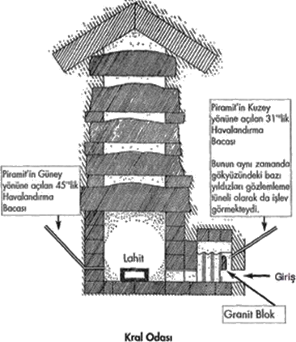
20. Yüzyıl'da en sansasyonel bulguları, dünyaca ünlü araştırmacı yazar Eric Von Daniken yayınladığı "Tanrılar'ın Arabaları" isimli kitabıyla duyurmuş ve Büyük Piramit'in normal yollarla inşa edilebilecek bir yapı olamayacağını olsa olsa bunun uzaylılarca yapılmış olabileceğini ileri sürmüştü. Günümüzde Keops'un uzaylılar değil ama bizim devremize ait uygarlıkların teknolojisiyle de yapılmadığı artık kesin olarak biliniyor. Ancak bu gizemli piramitle ilgili her sorunun cevaplanabildiği sanılmasın. Ortada hâlâ cevap bekleyen pekçok soru varlığını korumaktadır. Özellikle de konuya hâlâ klâsik yöntemlerle yaklaşan arkeolog ve tarihçilerin zihinleri cevaplayamadıkları sorularla doludur. Ayrıca şunu da unutmamak gerekir ki, günümüzde Büyük Piramit'in girilemeyen daha pekçok bölümü vardır. Modern bilgisayarlar ve robotlarla sürdürülen bu çalışmalar halen devam etmektetir. Ve aradan geçen bunca zamana kadar şunu kesin olarak söyleyebiliriz ki, piramit sırrını henüz tam anlamıyla bizlere sunmamıştır. Klasik Tarih Bilimcileri'nin zihninde bu yapıyı inşa eden teknoloji hâlâ büyük bir muammadır.
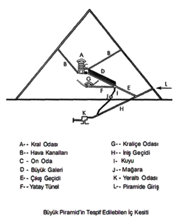
Gelelim piramitlerin yapım tekniklerine... Tonlarca ağırlığındaki taş blokların o devirde hangi teknik kullanılarak metrelerce yukarıya taşındığı ve böylesine üst üste yığılabildiği günümüzde hâlen tartışmalı olan konular arasındadır. Buna mantıklı bir açıklama henüz getirilebilmiş değildir. Çünkü o devirde yaşayan insanların her türlü teknolojik imkândan yoksun ilkel kabileler oldukları varsayımı ve ön kabulü, bu konunun mantıklı açıklamalarla aydınlatabilme imkânını ortadan kaldırmaktadır. Ancak konuya Klasik Tarih Bilimcileri'nin dışında yaklaşan araştırmacıların sayısı hiç de az değildir.
Teozofist A.P. Sinnett'in açıklamalarıyla başlayalım:
Büyük Piramit'in yapımında kullanılan devasa taş blokların kullanımı ancak ve ancak, daha sonraları insanlığın yitirdiği belirli Doğa Bilgisi'nin bu işte kullanılmış olmasıyla açıklanabilir. Doğa'nın gizemiyle ilgili bu bilgilerin sahipleri, ağır cisimlerin mevcut ağırlıklarını istedikleri gibi değiştirebilecek şekilde maddenin çekimini kontrol edebilmekteydiler. Dev yapılar mimarisinin harikaları ancak işte böyle açıklanabilir... Piramitlerin yapımını yönetenler kullanılan taşları kısmen levite etmek suretiyle bu işlemi kolaylaştırmışlardır. Bunun için majik asalarını kullanmış olabilirler. Bilgelere eski çağlarda doğanın kudretini açığa çıkartan anahtarlar teslim edilirdi. Gizli sihiri sözcükler ve sihirli asalar...
Manyetik alan yayan bir çeşit motor... Dalga boyları ve dev granit blokların levitasyonu... Bu teori bilimkurgu sayfalarından çıkmış fikirler gibi gelmektedir. Peki ama bu teoride bir gerçeklik olamaz mı?
Eldeki bazı eski tarihi kayıtlar da, yukarıda dile getirilen sıra dışı iddialara benzer bilgiler vermektedir. Örneğin iinlii Tarihçi Herodot'un o dönemle ilgili anlattıkları, Teozofist A.P. Sinnctt'in ileri sürdüğü teorinin, yabana atılamayacağını göstermektedir. Herodot da, Mısır'da ağır bir kayanın, üzerine konulan bir papirüs sayesinde levite edilerek taşındığına kendisinin bizzat şahit olduğunu tuttuğu tarihi kayıtlarına geçirmiştir.
Arap Tarihçilerinden Abu Zeyd el Balkhy'nin anlattıkları da Herodot'un kayıtlarıyla büyük bir paralellik gösterir; Büyük taş blokları yerlerinden kaldırmak ve taşımak için, bunların üstüne üzerinde bazı formüller yazılı olan papirüsler konurdu. Sonra bir avuç büyüklüğünde ve iç içe giren halklardan oluşan bir alet taşın üzerine tutulur, halkalar çevrilirdi. Bunun üzerine, taş blok ağır ağır yerinden kalkar ve istenen yere götürülebilirdi. Ünlü Araştırmacı Murry Hope da Arap Kaynakları'ndaki bu konuyla ilgili ilginç ifadelere dikkat çekmiştir:
Dev taş bloklar bir çeşit papirüse sarmalanıp bir rahip tarafından bir asayla dokunulduktan sonra ağırlığını tamamen yitirmekte ve kolayca hareket ettirilerek tam istenilen noktaya yerleştirilmekteydi. Ezoterizmle ilgili konularda dünyanın önde gelen araştırmacılarından olan Bn. Annie Besant da, piramitlerin yapımında kullanılan taşların levite edilerek taşındığını söylemektedir. Mısır'daki taşlar, ne sırf kas gücüyle ne de modern teknolojiyi aşan hünerli cihazlar kullanılmak suretiyle dikilmiştir. Bu taşlar, dünyasal mıknatisiyetin güçlerini kontrol edebilen kişilerce dikilmiştir. Neticede taşlar ağırlığını kaybediyor ve tek bir parmağın temasıyla yönetilmek suretiyle havada süzülerek, belirlenen yerlerine oturtuluyorlardı. Gerek bazı araştırmacıların dilegetirdikleri, gerekse de bazı tarihi kayıtlarda aktarılan bu sıradışı anlatımlara, eski çağlara ait efsanelerde de rastlanmaktadır. Bu efsanelerde büyülü asalardan sözedilmekte ve bu asalar vasıtasıyla bazı bilgelerin olağanüstü mucizeler gerçekleştirebildiği anlatılmaktadır.
Bu ifadelere sadece efsanelerde değil, kutsal kitaplarda da rastlamaktayız. Buna en güzel örneklerden biri Musa Peygamber'in asasıyla gerçekleştirdiği mucizevi olaylardır. Bu olaylar Kur'an-ı Kerim'in çeşitli Süreleri'ndeki ayetlerde ayrıntılarıyla dile getirilmiştir. Mısır'da bir Osiris Rahibi olarak eğitilen Musa Peygamber'in bu asayı da, yine Mısır'daki mabetlerden edindiği tahmin edilmektedir. Kur'an-ı Kerim'de konunun başlangıcı, Firavun'un Musa Peygamber'e söylediği şu sözlerle başlar:
Firavun Musa'ya: "Biz seni çocukken yanımıza alıp büyütmedik mi? Sonunda yapacağını da yaptın. Sen nankör birisin" dedi.
Firavun: "Alemler'in Rabbin de nedir?" dedi.
Musa: Kesin olarak inanacaksınız, bilin ki O göklerin, yerin ve ikisinin arasında bulunanların Rabbidir" dedi. Yanında bulunanlara: "İşitmiyor musunuz?" dedi. O sizin de Rabbiniz, önce geçmiş atalarınızın da Rabbidir" dedi,
Firavun çevresindekilere: "Size gönderilen peygamberiniz şüphesiz delidir" dedi.
Musa: "Eğer akledebilen kimselerseniz bilin ki O, Doğu'nun, Batı'nın ve ikisinin arasında bulunanların Rabbidir" dedi. Firavun: "Benden başkasını Tanrı edinirsen, and olsun ki seni zindanlık ederim" dedi.
Musa: "Sana apaçık bir şey getirmiş isem de mi?" dedi.
Firavun: "Doğru sözlülerden isen haydi getir" dedi. Bunun üzerine Musa değneğini attı, besbelli bir yılan oluverdi. (Şuarâ Suresi: 26/18,19,23-32)
Surenin devam eden ayetlerinde Firavun'un bu olaydan etkilendiği anlaşılıyor Bunun üzerine Firavun çevresindeki ileri gelenlere, ülkedeki tüm sihirle uğraşan bilgilenlerin en önde gelenlerinin toplanıp getirilmesi için emir verir. Bundan sonrasını yine Sure'nin devam eden ayetlerinden takip edelim:
Sihirbazlar belirli bir günün bildirilen vaktinde toplandılar. "Sihirbazlar üstün gelirlerse biz de onlara uyarız" dediler. Sihirbazlar geldiklerinde, Firavun'a "Biz üstün gelirsek, şüphesiz bize bir ücret vardır değil mi?" dediler. Firavun: "Evet, o takdirde siz gözde kimselerden olacaksınız" dedi.
Musa onlara: "Ne alacaksanız atın" dedi. Onlar da iplerini ve değneklerini attılar ve: "Firavun hakkı için, şüphesiz, biz üstün geleceğiz" dediler. Bunun üzerine Musa değneğini attı; onların uydurduklarını yutmaya başlayıverdi. (Şuarâ Suresi: 26/38-45)
Mısır'da o dönemler majik uygulamaların son derece yaygın olduğunu hatırlatmakta yarar görüyorum... Ayetlerde sihirle uğraşan alimlerden kastedilen Mısırlı majisyenlerdir... Surenin devamında Musa'nın majik güçleriyle başedemeyen majisyenlerin (sihirbazlann) yenilgiyi kabul ettiklerini ancak Firavun'un buna çok kızdığını görüyoruz. Firavun'un yanından ayrılan Musa Peygamber çevresindekilerle birlikte Mısır'dan ayrılarak Kızıldeniz'e doğru yola çıkar. Firavun da adamlarını yanına alarak onları yakalamak için peşlerine düşer:
Firavun ve adamları güneş üzerlerine doğarken onların ardına düştüler, iki topluluk birbirini gördüğünde, Musa'nın adamları:
"işte yakalandık" dediler. Musa: "Hayır, Rabbim benimle beraberdir, bana elbette yol gösterecektir" dedi. Bunun üzerine Biz Musa'ya "Değneğinle denize vur" diye vahyettik. Hemen deniz deniz ikiye ayrildi, her parçasi yüce bir dağ gibiydi. İşte oraya geridekileri de yaklaştırdık. Musa ve beraberinde bulunanların hepsini kurtardık. Öbürlerini suda boğduk. Bunda şüphesiz ders vardır ama çoğu inanmamıştır. (Şuarâ Suresi: 26/60-67)
Şuara Suresi'nden aktardığımız bu ayetlerin hemen hemen aynıları Araf Suresi'nin 103-139 Ayetleri'nde de bulunmaktadır. Aynı konunun hemen hemen aynı cümlelerle uzun uzun ayetlerle iki defa tekrar edilmiş olması da, üstünde ayrıca düşünülmesi gereken bir durumdur. Musa Peygamber'in asasıyla gerçekleştirdiği bir diğer mucizevi olay da, yine Kur'an-ı Kerim'in Bakara Suresi'nin 60. Ayeti'nin başlangıcında şöyle ifade edilmiştir:
"Musa milleti için su aramıştı, "Asanla taşa vur" dedik; ondan oniki pınar fışkırdı herkes içeceği yeri bildi."
Bu anlatılanlardan yola çıkan bazı araştırmacılar, bu asaların belirli bir dalgaboyu üreten araçlar olabileceğini ileri sürmüşlerdir. Bu iddia ilk kez 1947 yılında Walter Owen tarafından dile getirilmişti. Owen'a göre bu sihirli çubuklarla belirli bir dalgaboyunda önceden belirlenmiş bir vibrasyonel ses tonu oluşturulabiliyordu. Sesin ezoterik kullanımı hakkında ise şunları söylüyordu:
Ses, herkesin düşünemeyeceği türden imkânlar taşıyan bir güçtür. Ve bu gücün kullanımı, eski dönem ermişlerinin bildikleri, fakat günümüzün emekleyen biliminin yitirdiği veya karşısına geçip dudak büktüğü çok eskiye ait bir bilimdir. Evrenin çerçevesi ve dokusu ses gücü sayesinden ayakla durmakladır . Ve yine ses gücü sayesinde çözülerek yok olabilir...
Mısırlı rahipler bu bilime sahiptiler. Maht-Heru denilen Güç Sözcükleri (büyük enerjileri bünyelerinde barındıran özel sözcük ya da sözcük kalıpları) Insiyelere ölüler aleminin kapısını açıyordu. "Kral Odası"na açılan "On Odada yer alan ve temelin oturması sonucunda günümüzde sıkışıp kalmış ve artık hareket edemez bir hale gelen Granit Blok vardır. Bir zamanlar bu granit blok Başrahibin söylediği sözler sayesinde kaldırılıyor veya indiriliyordu... Bloğun adayı un ufak etmemesini sadece anahtar sözcüklerin gücü önlüyordu...
Eski Babil dönemine ait kayıtlarda sesin taş blokları kaldırmak için kullanıldığnıa ilişkin ifadelere rastlanır. Prof. Francois, "Kaide Büyücülüğü" isimli eserinde bu konuya değinerek; "Şurası muhakkak ki, eski çağlarda rahipler majik asalar vasıtasıyla fırtınalar çıkartıyor ve bin kişinin kaldıramayacağı taşları mabet inşa etmek amacıyla havalandırabiliyorlardı" demektedir..
Sonik tekniklerin kullanılmış olabileceği bugün bilim adamları arasında ciddi bir şekilde tartışılmaktadır. Piramidolog William Kingsland Mısır mabetlerinin yapımı hakkında daha ilginç açıklamalarda bulunmuştur:
Piramitler inşa edilirken, dev taş blokların taş ocaklarından getirilişi sırasında uzun mesafeler aşılılıyordu. Taşlar uygun sembollerin yazılı olduğu papirüslerin üzerine: yerleştirilir, arkasından taşlara bir asa ile vurulurdu. Bunun üzerintî taş bloklar bir ok atımlık mesafe boyunca havada hareket etmeye; başlarlardı . Bu şekilde taşınan taşlar, en sonunda piramile;rin inşa edildiği yere kadar götürülürlerdi . Ünlü fizikçi Albert Einstein da bu konuya ilişkin bir gözlemini şöyle açıklamıştır:
Bizim bilemediğimiz bazı sırlara eskilerin sahip olduklarını kabul etmek zorundayız. 600 Tonluk bazı taş blokların üst yüzeylerinin dışa doğru kubbeleşmiş olması dikkati çekiyor. Bu ancak muazzam bir çekim veya emme kuvveti ile meydana çıkabilecek bir fenomendir. Buraya kadar aktardığmız çeşitli kaynaklardan da rahatlıkla anlaşılabileceği gibi, piramitlerin yapılışında bilinen metotların dışında farklı bir yöntem izlenmiştir. Bu kayıtlardan anladığımız bir diğer gerçek de, bu yöntemin Tufan Öncesi Kültüre ait olduğudur.
Konuyu anlaşılır hâle getirebilmek için tarihin çok daha eski dönemlerine doğru uzanmamız gerekmektedir. Konuyu açalım:
Atlantis'teki bazı merkezlerde bulunan kristaller, kozmik enerjileri toplama ve dağıtım işlemlerinde etkin bir şekilde kullanılıyordu. Dev bir yansıtıcı gibi işlev gören bu merkezlerde büyük enerjiler odaklandırılıyor ve yansıtılıyordu. Dev yansıtıcılarda kullanılan bu kristallere, Edgar Cayce, medyonısal yollarla aldığı bilgilerde "Ateş Taşı" ismini vermiştir. Atlantis'teki bu enerji merkezleri, ilk başta "göksel -ruhsal irtibat" için kullanılmaktaydı. Bu "Enerji. Merkezleri" nde aynı zamanda psişik olarak insanlar yenilenmekte ve fiziksel olarak da bedenlerini rejenere edebilmekteydiler. Böylelikle yaşlanmanın da etkisini en aza indirebilmekteydiler. "Kristal Enerji Merkezleri" olarak isimlendirilen ancak niteliği tam olarak bilinmeyen bu ünitelerden, Atlantisliler daha sonraları enerji yayan bir kaynak yaptılar ve bunu geliştirerek ulaşım, iletişim ve yaşamın çeşitli alanlarında bu üniteleri kullandılar. Hatta doğa olaylarına bile, bu enerjilerle müdahalede bulunabilmekteydiler. Atlantis'te bu kristallere "Tuaoi Taşı?" ismi verilmekteydi.
Ezoterik kaynaklarda "Kristal Enerji Merkezleri" ve "Ateş Taşı" olarak geçen bu yerlerde kullanılan maddenin tam olarak özelliği bilinmiyor. Gerçekten bir kristal midir yoksa günümüzde bilinmeyen başka bir maddesel yapı mıdır?... Buna net bir cevap halen getirilememiştir. Edgar Cayce'nin medyomsal irtibat teknikleriyle elde ettiği dokümanlar arasında bu konuyla ilgili oldukça ayrıntılı bilgiler vardır. Bir fikir vermesi için hiç değilse birkaç tanesini sıralayalım:
Doğa güçlerinin, böyle ışınları ve etkinlikleri bir merkezde toplayan kristaller içinde biriktirilmesiyle, gemileri yalnız deniz üslünde değil, havada da sevk ve idare etmeye başladılar. Ayrıca insan sesinin ve vücüdunun bir yerden bir yere naklini sağladılar. Ateş Taşı" bugünkü deyişye (1943) amyantı andıran bir maddeyle yalıtılmış olan bir binanın merkezindeydi. Binanın taşın yukarısında kalan kısmı oval biçimindeydi. Belli açılarda kendi ekseni üzerinde hareket edebilen bu kubbe hem doğa enerjisini hem de kozmik enerjileri "Ateş Taşı"na aktarmaktaydı . Sonsuz enerjinin konsantrasyonu için hareket edebilen bir kubbeydi . Bu kubbe uzayda sevk edilen gemilere direkt enerji uygulamasında araya hiçbir engel girmemesi yani gemilerin hep görüş alanı içinde kalması için. raylar üzerinde yer değiştirebilecek tarzda inşa edilmiş bir kubbeydi . Taşıtların sevki, bugün radyo titreşimleri sayesinde uygulanan uzaktan kumanda yöntemini andıran indükleme yöntemiyle yapılıyordu. Yani taşıtlar, enerji istasyonunun merkezine yerleştirilmiş bir taşın ışınlarının geniye konsantre edilmesi yoluyla sevk edilmekteydi1er. Taşın hazırlanması devrin inisiyelerine düşerdi. "
Taş ışınlarının uygulanmasıyla yanan bir tür ateş sayesinde insanların vücutları şifa buluyor, hatta mucizevi bir gençleşme meydana geliyordu. Boylece beden sık sık gençleşiyordu. Psişik güçler üzerinde de bu enerjilerin büyük bir etkisi vardı . Doğa enerjilerine de etki edebilmektetdiler demiştik. Edgar Cayce'nin aktardıklarından arada bazı hataların da yapılmış olduğunu anlıyoruz. Bunlar kazara, yani yanlışlıkla çok yüksek frekanslara ayarlanınca, ikinci deprem döneminin başlamasına yol açtı.
Atlantis'in son döneminde ellerindeki bu imkanları negatif alanda kullananların çıktığı ve böylelikle doğanın dengesinin bozulduğu birçok ezoterik kaynak tarafından dile getirilmiştir. Bu imkanları negatif alanda kullananları ezoterik kaynaklar "Belial'in Oğullan" olarak nitelerler. Edgar Cayce ise bunlara "Şeytan " anlamına gelen "Satan Oğulları " ismini vermiştir:
Bu meırkezleıin "Satan Oğullan" tarafından kullanılması volkanik püskürme ve depremlere yol açtı . 'Satan Oğulları' sözkonuısu enerjileri yıkıcı güçlere dönüştürmüşlerdi. Böylece yeraltında, yerin derinliklerinde büyük patlamalara yol açtılar . Doğanın güçlü enerji deposundan gelen büyük volkanik patlamalar ve depremler sonucu kıta önce beş adaya bölündü. Edgar Cayce bir zamanlar AtJantis'te kullanılan bu enerji merkezleriyle ilgili bilgilerin halihazırda üç yerde bulunduğunu ve gelecekte bunların ortaya çıkacağını ileri sürmektedir. Ateş Taşı'nın yapımına ilişkin dokümanlar hali hazırda üç yerde mevcuttur
1- Atlantis'in Poseidia bölgesinin günümüzde su üstünde kalmış bulunan Bimini Adası yakınında.
2- Mısır'da
3- Meksika'da
Antik Mısır Uygarhğı'nda karşımıza çıkan bu konunun bir benzeri de, hatırlayacağı gibi, Orta Asya Eski Türk Yaşamı'nın içinde de yer almaktaydı...
Çok eski devirlerden kalan yaygın bir inanca göre:
"Türkler 'in atalarına göklerden gelen sihirli bir taş armağan edilmiştir. Bu taş her devirde Türk Samanları 'nın ve büyük Türk komutanlarının ellerinde bulunmuştur." Ve yine bu inanca göre günümüzde hâlâ bu taşın önde gelen Şamanlar'ın ellerinde bulundukları iddia edilmektedir. Bu anlatılanların sadece bir inançtan ya da söylentiden ibaret olmadığını binlerce yıl öncesine ait eski Çin Tarihi Kayıdan da teyid etmektedir. Eski Türkler'in de elinde bu tür bir taşın (Yada Taşı) bulunduğuna dair çok sayıda tarihi kayıt vardır. Çin Kaynakları tarafından tutulan bu kayıtlarda, Türkler'in bu taş vasıtasıyla istedikleri zaman yağmur veya kar yagdırabildikleri uzun uzun anlatılmaktadır. Atalarımızın istedikleri zaman yağmur, kar, dolu yağmur yağdırabildikleri, rüzgar estirip hatta fırtına çıkaıtabildiklerine dair ilk tarihi belgede şunlar kayıtlıdır:
Türkler'in büyük ataları Hunlar'ın Kuzey'inde bulunan So sülalosinden idi. Oymağın Başbuğu Ananbu idi. Bunlar yetmiş kardeş idi. Birincisi dişi kurttan türemiş olup adı Içjini-nişibu idi. Içjini-nişibu tabiatüstü özelliklere sahipti. Yağmur yağdırıp fırtına çıkartabilirdi. Yine aynı Çin Kaynaklan'nda 449 yılında meydana gelen bir savaş anlatılırken konuyla ilgili satırlara rastlıyoruz:
Evvelce Kuzey Hunlar'uı idaresinde bulunan Yüce han ahalisinde öyle kâhinler vardır ki, Cücenler'in saldırışlarına karşı durduklarında çok şiddetli yağmur yağdırdılar, fırtına çıkarttılar. Cücenler'in onda üçü sellerde boğuldu, soğuktan kırıldı. İslâm Kaynakları'nda Türkler'in bir zamanlar ellerinde bulundurdukları taş; yağmur taşı anlamına gelen "Haccr-ül Matar" ya da "Seng-ı Cede" olarak isimlendirilmiştir. İslam Kaynakları'nda anlatılanlara baktığımızda, Türkler'in bu sihirli taşıyla Müslümanlar'in da yakından ilgilendiklerini görüyoruz. İslâm tarihçilerinden İbn-ül Fakih'in kayıtlarında. Halife Ma'mun'un bu gizemli taş hakkında araştırma yapması için Nuh b. Esed'i vazifelendirdiği anlatılmaktadır. Nuh b. Esed Türkler arasında yaptığı incelemeler sonununda Halifeye, söz konusu haberlerin doğru olduğunu fakat olayın nasıl meydana geldiğini anlayamadığını bildirmiştir. İbn-ül Fakih tarihi kayıdarında, Horasan Emiri İsmail b. Ahmet'in Ebul Abbas'a anlattıklarına da yer vermiştir:
Yirmi bin kişi ile Türklere karşı savaşa çıktım. Karşımızda baştan ayağa kadar silahlı altmış bin Türk vardı. Bunlardan bir kısmı bizim tarafa geçti. Bunlar bize Türklein iri dolu yağdıracaklarnı söylediler. Biz de onlara: "Sizin kalbinizden küfür hâlâ çıkıp gitmemiştir, böyle işleri hiç bir insan yapamaz" dedik. Onlar: "Biz haber veriyoruz, sizi ikaz ediyoruz, onların tayin ettikleri vakit yarın sabahtır ama siz daha iyi bilirsiniz" dediler. Sabah oldu. Korkunç bulutlar bizim üzerimizi kapladı . Herkes korktu. Müthiş dolu yağdı. İbn-ül Fakih, bu olayla ilgili olarak İsmail b. Ahmet'in iki rekât namaz kılarak, bu dolu fırtınasını daha sonra Türkler'in üzerine yönlendirdiğini yazmaktadır. O devirde Arap İslâm Orduları aynı zamanda Allah'ın askerleri olarak nitelendirildiği için, onlar adına böylesine gurur kırıcı bir olayla karşılaşmak kabul edilebilir bir şey değildi. Bu nedenle söz konusu dolu fırtınasını kıldığı namaz sayesinde Türkler'in üzerine yönlendirildiğini yazarak konuyu noktalamasına şaşmamak gerekir.
Biz tekrar sihirli taşımıza geri dönelim...
Eski Türk Mitolojisi'ni oluşturan çeşitli efsanelerde de bu taştan bahsedilir. Hatta bu taşın nasıl kullanıldığı da kısmen açıklanır...
Bir örnek olması bakımından Er Gökçe Destanından konumuzla ilgili bir bölüm aktaralım:
...Yanımdaki adamlar susadı. Er Kosay'a susuzluktan şikayet ettiler. Er Kosay, uzun kulaklı sarı atının altından "Cay Taşını çekip çıkartı . Salladı, salladı yere koydu. Havadan yağmur yağdı. Yağmur suyunu içtiler.Abdülkadir İnan "Eski Türk Dini Tarihi" adlı kitabında "El-Lügat'ün Neviyye" isimli eski bir lügatta "Yada Taşı" hakkında şöyle bir açıklamanın yapılmış olduğunu yazar:
Yağmur boncuğu derler bir nesnedir ki , ona kurban kanı sürülmekle yağmur yağar. Bu gizemli taşla ilgili elimizdeki tüm bilgileri yan yana getirdiğimizde, onun kullanım metotları olarak; taşın su içine konulduğu, suyun üzerine asıldığı, birbirine sürtüldüğü veya taşın sağa sola hareket ettirilerek sallandığını görüyoruz.
Bu konuda günümüze kadar gelen Farsça bir şiir "Yada Taşının kullanılmasıyla ilgili önemli çağrışımları beraberinde getirmektedir. Aktarıyorum:
Şekilli bir taştır ki, her ne zaman ona dua edilse göğü yarar ve çokça bulut ve yağmur getirir, bu iş Türkler arasında yaygındır.
Bu anlatımlardan taşın çalışma prensibiyle, düşünce enerjisinin onu yönlendirmesi arasında çok sıkı bir bağ olduğu anlaşılıyor. Demek ki, düşüncelerle yönlendirilebilen bir maddesel özelliği olan bir taşla karşı karşıya bulunmaktayız. Bu taşın en son hangi tarihe kadar kullanıldığı tam olarak bilinmiyor ama bu taştan Osmanlılar'in da haberdar olduklarını yine tarihi belgelerden anlıyoruz. Şaban Şifaî'nin IV. Mehmet'e yazdığı "Risâle-i şifâiyye fi beycini enva-i ahcar" isimli eserinin 14 sayfası bu taşla ilgili önemli anlatımlar içerir.Özetle aktarıyorum:
Hiç bulut olmadığı halde Yada Taşı ile yapılan işlemden iki saat sonra bulutlar gökyüzünde görülmeye başlar ve ardından bereketli yağmurlar yağar. Ne kadar gerekiyorsa ihtiyaç olunan kadarıyla yağmuru yağdırmak Yadacı'nın hünerine bağlıdır. Taşlar farklı renklere sahip olabilmektedir. Genellikle siyaha çalan toprak renginde olup üzerinde kırmızı noktalar vardır. Beyaz olup üzerlerinde kırmızı noktalar olanlara da rastlanmıştır. Büyüklükleri bir kuş yumurtası kadardır . Kaşgarlı Mahmut'un verdiği bilgilerle, bu anlatımlar büyük bir paralellik gösterir. Kaşgarlı Mahmut söz konusu taşın iki türlü olduğunu ve bazı yörelerde birine "Örünk Kaş diğerine ise "Kara Kaş" denildiğinden bahseder. Örünk sözcüğünün Doğu Türk Lehçesi'nde ak yani beyaz anlanına geldiğini de hatırlattıktan sonra özetimize devam edelim...
Dolu afetinde tarlaları korumak için taş yüksekçe bir yere asılır ve ona dokunulmaz. Onu ancak bu işin sırrını bilen Yadacılar kullanabilir. Taşların birbirlerine sürtülmesi ve bir tas suyun içine taşın atılması ile bu işlemler uygulanır. Ancak bu işlemleri sırrı bilen kimselerin (Yadacılar'ın) yapması gerekir. Aksi takdirde arzu edilen sonuca ulaşılmaz. Taşı suya atmak yeterli değildir. Bu anlatımlar da taşın kullanınn ile ilgili yukarıdaki tespitlerimizi doğrular niteliktedir. Ayrıca bu taşın sadece kullanım metodunu bilenlerin elinde işe yaradığını anlatması da önemlidir. Şimdi bu taşın gerekli metotlara uyulmadan kullanıldığında ne tür sonuçlan beraberinde getireceğini gösteren; 13. Yüzyıl'da yaşanan ve tarihi kayıtlara geçen bir olayı sizlerle paylaşmak istiyorum:
Velaşgerd önüne gelinc e yöredeki halk bize şiddetli sıcak, kuraldık ve hayvanları rahatsız eden sineklerden çok şikayet ettiklerini bildirdiler. Bunun üzerine taşlarla yağmur yağdırdmaya karar verildi. Merasimi bizzat Sultan idare ediyordu."İlk başta ben buna inanmıyordum. Fakat sonradan bunun birçok tecrübelerle gerçek olduğuna gözlerimle şahit oldum." diyen S.A. Nesevi olayın gelişimini şöyle anlatmaya devam ediyor:
Bu kez de geceli gündüzlü, ardı arkası kesilmeden yağan yağmurdan halk şikayert etmeye başladı. Yağmur sihri yapıldığına halk pişman oldu. O kadar çok yağmur yağdı ki,her taraf çamur ve bataklığa döndü. Sultan'ın çadırına bile girilmez oldu. Yağmur dinmek bilmiyordu. SEL ne var yoksa her şeyi mahvetti. Bir ara sütninesinin Sultan'a şunları söylediğini işittim:
"Sen bir hüdâvent alemsin.... Fakat yağmur yağdırmakta değil... Çünkü böyle bir tufan çıkartmakla hata. ettin... Senin yerinde başka birisi olsaydı bunu yapmazdı, sadece elverecek kadar yağdırırdı"
Bu tür taşların yanlış kullanımının ne tür sonuçlar doğuracağını göstermesi bakımından yukarıdaki tarihi kayıtlar son derece önemlidir. Kaldı ki, bu taşların Atlantis'te kullanılanların küçük birer örnekleri olduğu düşünülecek olursa, Atlantis'teki bu tür taşlardan oluşan devasa enerji merkezlerinin negatif alandaki kullanımının, nasıl büyük bir doğal afetler zincirine neden olduğu sanırım daha iyi anlaşılacaktır.
Çevrelerine belirli tesirler yaydıklarına ve canlı organizmalar üzerinde hem psişik hem de fiziksel etkilerde bulunduklarına inanılan taşlara eski uygarlıkların kültürlerinde ve ezoterik çalışmalarda "Tılsımlı Taşlar" ismi verilmiştir. Ezoterik prensiplere göre bazı taşlar evrendeki ve yerküredeki birtakım güçleri çekme, biriktirme, dönüştürme ve yayma özelliklerine sahiptir. İnisiyatik çalışmalarda bu tür taşların enerjetik özelliklerinden yararlanmak, başlı başına bir araştırma konusuydu. Ve elimizdeki bu konuyla ilgili kayıtlar eskilerin bu konuda hayli ileri düzeyde bilgi sahibi olduklarını göstermektedir. Ezoterizm'de taşlar dört ana grupta sınıflandırılmıştır:
1- Atlantisliler'in özel işlemlerden geçirdikten ve biçimlendirdikten sonra enerji santrallerinde kullandıkları nadir kristaller ve çok farklı bir maddesel yapıya sahip olan özel taşlar.
2- Tufan'dan sonra bizim devremize ait uygarlıkların inisiyatik merkezlerindeki mabetlerde yer alan psişik çalışmalarda kullanılan, kökenleri bilinmeyen ve günümüzde kayıp durumdaki taşlar. Bu taşlardan bazılarının kozmik kökenli, bazılarının ise Atlantis kökenli olduklarını ve bizim devremizin ortalarına doğru bazılarının yeryüzünün belirli yerlerine gizlenmiş oldukları söylenir. Kabe'deki Siyah Taş ve İstanbul'a yerleştirildiği söylenilen ancak nerede olduğu bugün için bilinmeyen gizemli taş bu grupta değerlendirilmektedir.
3- Günümüzde mevcut olan değerli taşlar ve kristaller. Bunlar da doğru kullanıldığı takdirde canlılar üzerinde önemli etkilerde bulunduğu yapılan deneysel çalışmalarla ispatlaıımış durumdadır Günümüzdeki New Age yaşam kültüründe bu çalışmaların önemli bir yeri vardır.
4- Değersiz taşlar Kendiliklerinden özel bir enerjetik yayınları olmayan, ancak ley hatları üzerine dikildiklerinde belirli bir büyüklükte olmak koşuluyla yerkürenin telürik enerjisiyle ilgili bir etkinlik meydana getirebilen taşlardır.
Puta tapmanın perde arkası:
Daha önce de söylemiş olduğum gibi, taştan yapılmış putlara tapma meselesinin ardında yatan gizli gerçek, yukarıda farklı yönleriyle ele aldığımız "Tılsımlı Taşlar" in çevrelerine yaydıkları etkiyle bağlantılıdır.
Eski devre ait insanlar taşlara tapmıyorlardı. Taşların sihirli gücünden yararlanmaya çalışıyorlardı. Bu onları gözleyenlerce yanlış yorumlandığı için onların taşlara taptıkları sonucuna ulaşılmıştır.
Neyse... Konumuzu fazla dağıtmamak için bu meseleye girmek istemiyorum... Gelelim sihirli asalara...
Asaların da, yukarıda sözünü ettiğimiz enerji toplama ve dağıtma özelliğine sahip bu özel maddelerden yapılan küçük modeller olduğu tahmin edilmektedir. Eski uygarlıklara ait kabartma ve resimlerde sıklıkla karşımıza çıkan asa, ezoterizmde her şeye uzanan tesir gücünü sembolize etmektedir. Ancak şunu hemen belirtmek gerekir ki, asa sadece bir sembol değil, aynı zamanda kullanılan bir objedir. Kullanıldığı alan ise, manyetik ve psişik enerjilerin bu obje vasıtasıyla bir yerden bir yere yönlendirilmesidir. Önce Atlantis'te, Tufan Sonrası'nda ise bizim devremize ait uygarlıkların inisiyatik merkezlerinde bu objeler- sıklıklakullanılmıştır. Gizli mabetlerde sürdürülen inisiyasyonlarda, inisiyatörlerin psişik etkinliklerinde kullandıkları, özel işlemlerden geçirilmiş taş ve madenlerden yapılma ve günümüzde "tılsımlı" olarak adlandırılan özel değneklerin varlığı bilinmekle birlikte, bu özel değneklerin niteliği hakkında çok az bilgiye sahip bulunulmaktadır.
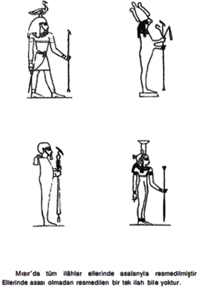
Konumuzu kısaca toparlarsak şunları söyleyebiliriz:
Eldeki tüm verilerden anlaşıldığı kadarıyla, bu asalar sıradan değnekler olmayıp, birtakım enerjileri çeken, toplayan, dönüştüren ve psişik yeteneklerle ilgili uygulamalarda gücün etkisini misliyle büyüten bir nevi amplifikatör gibi kullanılabilen özel aletlerdi. Önce Atlantis'te sonra da Mısır'daki inisiyelerin ellerinde gördüğümüz bu sihirli asalar, tarihin sonraki dönemlerinde de eksik olmamış ve bu asaları kullanan pekçok kişi tarih sahnesinde görülmüştür. Hatta bazı Peyggamber'lerin ellerinde de karşımıza çıkmıştır. Ki bunlardan en sonuncusu Musa Peygamber'dir. Eldeki kayıtlara göre, Thot'un asası, tellerin spiral biçimde bir bobine sarılmasını andıran iki yılanın sarılı olduğu bir değnekti . Mısır'da inisiye edilen Orfe'nin de bir asaya sahip olduğu ve bu asanın ise kozalak başlı olduğu ifade edilmektedir. Musa Peygamber'in asasının şekliyle ilgili ayrıntılı bilgi bulunmamaktadır. Ancak bu konuyla ilgili eski bir Yahudi inanışına göre, yeryüzüne melekler tarafından indirilmiş bu objeyi Musa Peygamber'e kimliği meçhul ihtiyar bir bilge hediye etmiştir.
Türkler'in elinde bulunan Yada Taşı'nın da göklerden geldiğine dair Atalanmız'ın çok eski bir inanca sahip olduklarından söz etmiştik. Bu inançla, Yahudi Gelenekleri'ndeki inanç arasında büyük bir paralellik olması meselenin nerelere bağlı olabileceğini göstermesi bakımından son derece düşündürücüdür. Bu arada Kabe'deki siyah Hacer'ül Esved Taşı'nın da cennetten geldiğine dair inancı burada bir kez daha hatırlatalım...
Zamanla bu özel yapım asalar ortadan kaybolmuşsa da, asa, kudret ve otorite sembolü olarak eskinin anılarında yaşamaya devam etmiştir... Böylelikle asa kullanılan bir objeden bir sembole dönüşmüştür. Bu şekliyle sadece ezoterik çalışmalarda yerini korumakla kalmamış aynı zamanda krallar, rahipler hatta askeri ve adli otoritelerce de kullanılmaya başlanmıştır. Örneğin eski Yunanistan'da yargıçlar, generaller ve yüksek öğretim görevlileri farklı türdeki asalarıyla dolaşmaktaydılar. Bu dönemlerde bazı inisiyatörlerin ellerinde görülen asalar değerli taş ve madenlerden oluşmuş olmakla birlikte, öncekilerin sahip oldukları özel niteliklerden oldukça uzaktı. Ve bu nedenle de psişik etkinliklere çok büyük bir katkıları yoktu. Bu sürecin sonunda inisiyatörlerin ellerindeki asalar, zamanla enerjetik bir işlev görmekten çok, eski asaların anısını yaşatan bir sembole dönüştüler. Böylelikle inisiyötörlerin asaları inisiyatörlügün sembolü hâline geldiler. Geçmişe ait bu anı, eski uygarlıkların mitolojilerinde ve dinsel öğretilerinde sembolik bir şekilde yaşatılarak, günümüze kadar gelebilmiştir.
Bunlardan birkaçını sıralayalım:
-Hititler'de ucu spiral biçimli şekilli asa.
-Hint'te İki sipralli asa.
-Yunan'da iki yılanlı asa.
-Orfe'nin kozalak başlı asası.
-Yunan Mitolojisinde ise Zeus'un Kartal başlı asası.
-Mezopotamya'da yıldırımı andıran asa. Mezopotamya Mitolojisi'nde bu asa Sirius'la özdeş kılınan İlâh Nin-urta'nın elinde bulunmaktadır.
-Taoizm ve Hinduizm'de yedi düğümlü asa.
-Mısır'da ise Köpek başlı, çakal başlı, üç başlı, kamçılı ve kanca uçlu asalar.
Asalarla ilgili kayıtlar en son olarak hem Musevilik'te hem de İslâmiyet'te de yerini alamış ve böylelikle bu hatıra günümüze kadar gelebilmiştir. Evet... Konu, Musa Peygamber'in asasından açılmış ve daha sonra da Mısır'la ilgili eski kayıtlarda geçen ağır taş blokların nasıl sıradışı bir şekilde levite edildiğini birlikte incelemiştik... Sanırım bu açıklamalarımızla, meselenin tamamı olmasa da, hiç değilse belli bir bölümü gün ışığına çıkmaya başlamış bulunuyor.
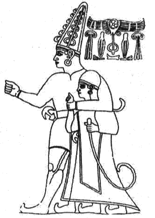
Bir Hitit Tanrısı'nın himayesindeki Hitit Kralı ve elinde tuttuğu spiral uçlu asa.
Biz tekrar Antik Mısır'a geri dönelim...
Mısır'daki üç büyük piramit ve özelhkle de "Büyük Piramit" olarak anılan Keops, ilk başta devasa boyutlarıyla insanlar üzerinde büyük bir hayranlık uyandırmıştır. Bugün de buraları gezen turistler, bu yapılar karşısında aynı hayranlığı duymaktadır. Ancak bu devasa yapıların insanı hayrete düşüren tarafı sadece boyutları değildir... Keops, Dünya üzerindeki bulunduğu yer itibariyle de garipliklerle doludur... Örneğin Piramidin tara uç noktasından geçen meridyen, kara ve denizleri iki eşit parçaya böler. Konuyu açalım..
17. Yüzyıl Matematikçisi Graves'in Büyük Piramidi ziyaret edip onun boyutlarını ölçtüğü günden bu yana, Büyük Piramidi inceleyen hiç kimse, Piramit'in gelecekteki bir dönemde ortaya çıkacak şifreli mesajlar taşıyan bir yapı olduğuna kuşku duymamıştır. Kadim dünyanın kültür ve felsefe anlayışı rakamlara dayanırdı. Geleceğe ait bir mesajın iletilmesinde rakamların kullanımının önemli bir yeri vardı. Rakamlarla şifrelendirilen pekçok mesaj bu şekilde gelecek nesillere iletilirdi. Tasarımı abideler içinde en dikkatli şekilde gerçekleştirilmiş çağların en büyük abidesinin inşaatçılarının da, bu yöntemi piramitte kullanmamış olmaları imkansızdı. Nitekim daha önce aktarmış olduğumuz gibi Keops'un, boyutlarında matematiksel bir mesajın gizli olduğunu görmüştük. Ancak daha sonra yapılan araştırmalar Keops'un matematiksel şifresinin bunlarla kısıtlı olmadığını göstermiştir. Keops'un sahip olduğu bu sayısal ve matematiksel şifrelerinden biri de, Dünya Coğrafyası'nda yeraldığı nokta ile ilgilidir:
Günümüzde kullanılan tek boyutlu açılmış dünya haritası gözönüne alındığında, Büyük Piramit'in dünyanın tam ortasına yerleştirilmiş olduğu görülmektedir!...
Bunu ilk farkeden kişi, 19. Yüzyıl'da Büyük Piramit'te incelemeler yapan İngiliz Astronom Prof. Piazzi Smyth olmuştur.
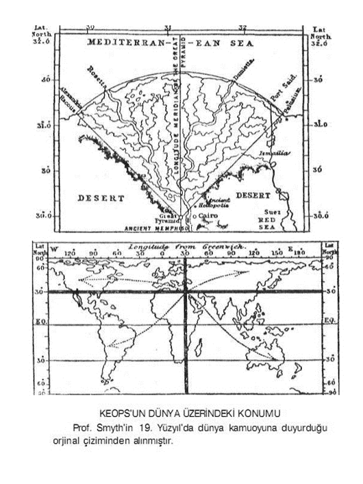
Prof. Smyth, Büyük Piramit'in tam olarak Ekvator'dan Kutba kadar olan mesafenin üçte birini belirleyen 30" Kuzey Enlemi üzerinde yeraldığını tespit etmiştir. Piramit Aşağı Mısır'daki tüm ovayı çevreleyen dağ sıralarının Güney ucuna yerleştirilmiştir. Prof. Smyth'in çizmiş olduğu birinci haritadan da görülebileceği gibi, Kuzey kıyı hattı oldukça düzgün ve simetrik bir yay oluşturur. Bu yayın ait olduğu dairenin merkezi tam olarak Piramidin bulunduğu yere rastlar. Burası aynı zamanda Mısır'ın da tam merkezi'dir. Piramid'in tabanını iki eşit parçaya bölen Kuzey-Güney yönünde uzanan Boylam hattı, diğer bütün Kuzey-Güney Boylamları'na nazaran en fazla kara parçası ve en az deniz üzerinden geçen hattır. Yine benzer bir şekilde Piramid'in tabanından geçen 30' " Kuzey Enlemi de, en fazla kara parçasını kaleden enlemdir. Bu ilginç rastlantıyı Prof. Smyth şöyle açıklamıştır:
"Dünya'nın her yanında insanların yaşayabileceği tüm kara parçalarım dikkatle topladığınız takdirde, hepsinin merkezi, Aşaği Mısır'da Büyük Piramitin bulunduğu yöreye rastlamaktadır. "
Bu aynı zamanda bir kehanet niteliği de taşır!...
Büyük Piramit'in Tufan'dan önce yani Atlantis'in batışından önce yapıldığı dikkate alınırsa, o dönemlerdeki kara ve denizlerin dağılımının bugünkü gibi olmadığı ortadadır. Eğer Atlantik Okyanusu'nda halen Atlantis Kıtası varolmuş olsaydı Enlem ve Boylamlar'ın çizdiği oranlar hakkında aynı şeyleri söyleyebilmemiz mümkün olamayacaktı. Eğer Piramid'in şifreli matematiğinde böyle bir oran gözetilmişse, o halde ortaya şöyle bir sonuç çıkmaktadır: Atlantisliler kıtalarının batışından sonra Dünya üzerinde nasıl bir coğrafi konumlanmanın oluşacağını önceden biliyorlardı!...
Bu da, yaşanacak büyük Tufandan sonra Dünya üzerinde nasıl bir kıtasal oluşumun ortaya çıkacağını, Mısır'da inşa etlikleri Keops Piramidi'ne şifreli bir şekilde sakladıkları anlamına gelmektedir, İşte konunun belki de üzerinde durulması gereken en önemli noktalarından biri budur Keops bulunduğu coğrafik konumu itibariyle geçmişin büyük bir kehanetini taşımıştır
30. Enlem'le 30. Boylam üzerinde bulunan Keops, bulunduğu nokta itibariyle aynı zamanda, Dünya'mn diğer gizemli noktaları ile de büyük bir uyum içindedir.
Bermuda Üçgeni, Ejder Üçgeni ve Lhasa
Keops'un tam olarak tabanından geçen 30. Kuzey Enlemi de Dünya üzerindeki bazı gizemli noktalarla irtibatlıdır Gize'den ayın uzaklıkta olmak üzere Batı'da Bermuda Üçgeni, Doğu'da ise Japonya açıklarındaki Ejder Üçgeni bu enlemin üzerinde yer alır Merkezi Gize olan bu her iki simetri içinde bulunan bölgelerin geçmişi bugün bile açıklanamayan yaşanılmış bir dizi esrarengiz olaylarla doludur Üstelik aynı enlem Tibet'in gizemli başkenti Lhasa üzerinden de geçmektedir.
Piri Reis Haritası'nın Odak Noktası
Gize'yi coğrafi özelliği bakımından dikkat çekici hale getiren bir diğer belge de kuşkusuz ki, bir zamanlar tüm dünya kamuoyunu meşgul eden ve çeşitli iddiaların ortaya atılmasına neden olan ünlü Piri Reis Haritası'dır. Elimizdeki mevcut parçalardan anlaşıldığı kadarıyla bu haritanın projeksiyon sistemi Gize üzerinde odaklanmıştır.
Gize'den Anadolu'ya uzanan Şifreli Geometri
Şifreli geometriyle ilgili Gize'nin bir başka bağlantısı da Anadolu topraklarında kendisini gösterir. Şimdi size ilk bakışta belki de tesadüfmüş gibi görünebilecek aşağıdaki şekilden bahsetmek istiyorum. Görmüş olduğunuz gibi, Gize'deki Büyük Piramid'in bulunduğu bölge ile Anadolumuzun iki tarihi merkezini birleştirdiğimizde bunlar arasında mükemmel bir ''eşkenar üçgen" meydana gelmektedir. Haritamızda görmüş olduğunuz her üç merkez de bir zamanlar önemli inisiyatik merkezlerdi. Bu merkezlerin böylesine bir geometrik bir düzen içinde yer alması sadece basit bir tesadüf müdür? Belki de evet...
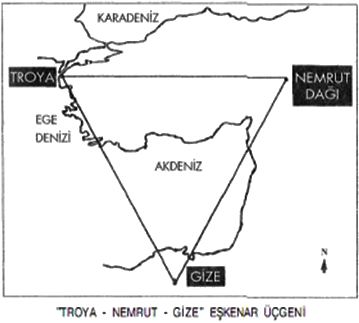
Ancak tesadüfler bununla sınırlı değildir!...
Bir zamanlar önemli bir fonksiyon gören bu inisiyatik merkezler aynı zamanda önemli kehanet merkezleri olarak da işlev görüyordu... Yani kehanetlerin yapılabilmesine son derece elverişli olan "Spiritüel Coğrafya" üzerinde yer almaktaydılar. Robert Temple "The Sirius Mystery" adlı eserinde konuyla ilgili şu satırlara yer vererek, karşı karşıya kaldığımız bilmeceye işaret eder:
Eski kehanet merkezleri ilk bakışta rastgele oraya buraya serpiştirilmiş gibidir. Oysa dağılımlarında belirgin bir model vardır. Bu model ayrıca antik çağda hayli ileri bir coğrafya ve ilişkili disiplinler bilgisine işaret eder. Bu kehanet merkezleri eski dünyada dinin uygulamaya geçirildiği ana merkezlerdi. Varlıkları asla bir tesadüfe bağlı olamazdı. Tesadüfler bunlarla sınırlı değildir demiştik... Üçgenimize bir kaç unsur daha ilave ettiğimizde, ne denli ilginç bir durumla karşı karşıya olduğumuz daha iyi ortaya çıkmaktadır. Üçgenimizin Gize'deki ucundan alacağımız açı ortay Anadolumuz üzerinde uzanan üçgenimizin tabanını tam ortadan ikiye bölerken Konya'nın üzerinden geçer ve biraz daha uzatıldığında yan sayfada görmüş olduğunuz gibi Ankara'yı işaret eder.
Anadolu'ya Horosan'dan gelmiş olan Mevlana'nın Mevlevilik İnisiyasyonu'nu oluşturacağı yer olarak Konya'yı seçmiş olması, tüm ezoterizmle ilgili araştırma yapanlarca bilindiği gibi, belirli bir spiritüel coğrafya bilgisine dayanmaktaydı.
Gelelim Ankara'ya...
Ankara sözcüğü "Çapa" anlamına gelen "Anchor" (ya da "Ancor") isminden gelmektedir. Bu isim Frigyalılar'a ait bir sözcüktür. Anadoluda yaşayan eski bir efsaneye göre Kral Midas bulduğu deniz çapasından dolayı bu bölgeye "Anchor" ismini vermişti. Bu efsanenin mecazi bir anlam taşıyabileceği hep düşünülmüştü. Çünkü denize kıyısı olmayan bir bölgede, deniz çapasın ne işi olabilirdi ki?!...
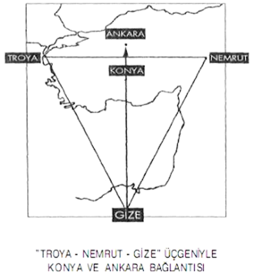
Yakın zamana kadar bunun nasıl bir mecazi anlama sahip olabileceğiyle ilgili hiç bir mantıksal açıklama yapılamamıştı. Ancak daha sonraları ortaya çıkan ve sizlerle paylaştığımız geometrik şekil, bu anlamsızlığı bir anda ortadan kaldırmıştır. Yan sayfadaki şekilden de rahatlıkla anlaşılabileceği üzere çapanın sağ ve sol uçları Nemrut ve Troya Çapanın uç tepe noktası Ankara'yı gösterirken, çapanın alt sapının bitiş noktası ise Gize'ye denk gelmektedir Troya - Nemrut - Gize eşkenar üçgeninin ortaya koydukları bununla da kısıtlı değildir...
Troya Nemrut hattını Batı yönüne doğru uzattığımızda yine tarihi geçmişi büyük gizemlerle dolu olan ve Troya ile önemli bir bağlantısı bulunan Cumae'ye denk geldiğini görmekteyiz.
Yan sayfada oluşan geometrik şeklin ne denli muntazam hatlara ve odaklara sahip olduğuna dikkatlerinizi çekmek isterim. Şekilli geometriye verilebilicek en güzel örneklerden biridir. Gize'nin haricinde Mısır'la bağlantılı başka şifreli geometrik örnekler daha vardın Yeri geldiğinde bunlarla ilgili de birkaç örnek vereceğim...
Piramitler şekilsel özellikleriyle enerjileri konsantre etme özelliğine sahip oldukları gibi aynı zamanda şekilsel özellikleriyle ezoterik anlamlara da sahiptir. Koni şeklinin tabanının daire yerine köşeli kare bir biçime dönüştürülmesiyle elde edilen piramit şekli esas olarak ezoterik sembolizmde koni sembolünün içerdiği anlama sahiptir.
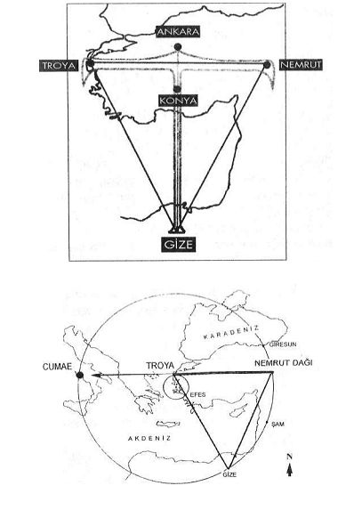
Piramidin şekilsel olarak neyi sembolize ettiğini anlamak için önce bu geometrik şekli parçalarına ayırmak gerekir Piramidi oluşturan geometrik şekiller iki kısımdan oluşur. Temeli kare, yan kenarları ise tepede birleşen dört adet üçgen...
"Ezoterik Semboller Lisanı"na göre "Daire" ile "Kare" sembollerinin birbirlerini tamamlayan anlamları vardın Ezoterik alfabede daire birincil semboldün Kare daireden türetilmiş ikincil bir semboldün Ancak karenin ikincil bir sembol olması onun daha az değerli olduğu anlamına gelmez.
Kare maddesel alemin varoluşunu temsil eder.
Daire ise, en genel anlamıyla evrensel varoluşu ve birliği temsil eder.
Bu tanımlamadan da anlaşılacağı üzere, Daire'nin spiritüel alanda, Kare'nin ise maddesel alanda kullanılan sembolik anlamları vardır. İşte bu anlamları itibariyle Ezoterizm'de kare haline getirilmiş daire sembolünden sözedilin Bu dönüşüm aynı zamanda birbirleriyle ölçülemez iki unsurun yani tanımlanabilir ve tanımlanamayan unsurların algılanmasını sağlan Kare ile daire daha kolay algılanır. ("Aşağısı yukarıya yukarısı aşağıya benzer" ezoterik tanımlaması ile bu anlatmaya çalıştıklarımız bağlanlılı meselelerdir)
Temeli daire olan asıl form kare ile kendisini somutlaştırır. Bu da kutsal mabetlerin temel fonnunu oluşturun Yani temeli kare olan yapıyı. Temeli kare olan yapı "Kutsal Mimari"de üçgenle yükselmek zorundadır Çünkü üçgen kozmik hiyerarşinin sembolüdür. Aynı konik yükseliş gibi...
Maddesel alanda bu yükselişinin sonu kendisini piramit şekliyle ifade eder. O halde piramit şekline genel olarak baktığımızda, spiritüel alanın piramit şekliyle maddesel alanda tezahür etmiş ya da yansımış hali olduğunu söyleyebiliriz. îşte "Kutsal Mimari"nin özünü ve temelini oluşturan ezoterik alfabenin kısa açıklaması budur. Ezoterizm'de piramitsel mimarinin Kozmik Mabed'in bir yansıması olduğunun söylenmesinin nedeni sanırım şimdi daha iyi anlaşılacaktır. Evet... Piramit şekilsel özelliğiyle "Kozmik Mabedi" yani spiritüel ve maddesel alanlarıyala birlikte, kozmik hiyerarşik varoluşu sembolize etmektedir. Konuyla ilgili ünlü araştırmacı John Michell şunları söyler:
Piramid'in orjinal işlevi "Dünyasal Güçler " ile "Kozmik Güçler"i bir araya getirmek ve bu sayede yeryüzünün bu güçlerin verimli iş birliğirıi sağlamaklır. Bu olgu piramidin geotmetrik sembolizmi içinde açıkça ortaya konulmuştur. Çünkü piramit dairenin kare haline; getirilme sanatının yüce bir abidesidir. Bu abide üçgenlerle yükselir ve konik tarzdan piramidal tarza dönüşür. Bu dönüşüm, konik tarzdan piramidal tarza olduğu gibi tersine de olabilir. Böylelikle piramitten koniye geçilir ki, bu ruhsal yükselişe karşılık gelir. Zaten piramidin içinde gerçekleştirilen inisiyatik çalışmalarla hedeflenen de buydu. Piramit üst tepe noktasından aşağıya doğru Kozmik veya Spiritüel bir kaynaktan tesirin aşağıya inişini ve kozmik hiyerarşiyi sembolize eder. Tepe noktası İlâhi Kelâm'ı. kozmik veya spiritüei kaynağın merkezini; tabanı ise esirin hedefi olan mekânı temsil eder.Piramidin tabandan (epeye doğru olan çıkışı ise, varlığın kozmos içindeki yükselişini, evrimini ve ruhsallığa doğru olan ilerleyişini, geldiği kaynağa geri dönüşünü ifade eder.
Musa Peygamber Mısır'dan ayrıldıktan sonra bu ezoterik sembolizmi iki üçgenin iç içe geçmesi ile dile getirmiştir. Bu sembol daha sonraları İsrailoğulları'nın dinsel ve ulusal simgesi haline gelmiştir. Şu anda Sionizmin sembolüne dönüşmüş olsa da temeli yukarıda dile getirmiş olduğumuz gibi çok eskilere dayanmaktadır.
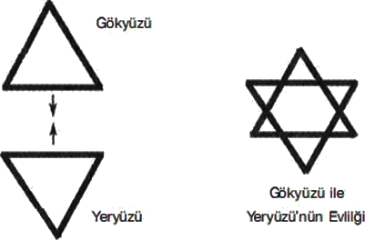
Gökyüzü ile yeryüzünün evliliğini ifade eden bu sembolün içerdiği ezoterik anlam, günümüzde bu sembolü bayrak yapanlarca unutulmuş durumdadır. Tepe noktası yukarıya bakan üçgen göğü, aşağıya bakan üçgen ise yerin sembolü konumundadır. Bunların iç içe geçmesi tasavvufta "Vuslat" olarak ifade edilen göğün ve yerin evliliğinin yani göksel bilgilerin yeryüzünde ortaya çıkmasını ifade eder ki, bu durum varlığın şuurlanmasıyla ortaya çıkacak bir sürece karşılık gelir. Bir başka deyişle göksel bilgilerin insanda tezahür etmesi anlamına gelir. Bu aynı zamanda inisiyasyonun sonunu gösterir. Amaçlanan hedefe artık ulaşılmış ve inisiye adayı büyük zincirin bir halkası haline gelmiş demektir.
Piramidin sözlük anlamı da başlı başına büyük bir sırrı içinde barındırır. Günümüzde kullanılmakta olan Piramit sözcüğünün kökeni Mısır Lisanı'na değil, Yunanca'ya dayanır. Piramit sözcüğü Yuananca'da "Pyros" sözcüğünden türetilmiştir. "Pyros" Yunanca'da "Ateş" anlamına gelmekteydi. Bu sözcüğün "Muhteşem Işık" anlamında mecazi kullanımı da bulunmaktadır. İlk başta bu mimari yapıya "ateş" ya da "muhteşem ışık" anamına gelen bir sözcüğün verilmiş olması biraz garipsenebilir. Ancak bu yapının gizli kalmış bazı özellikleri dikkate alındığında, Antik Yunan'da bu yapıya neden böyle bir sözcüğün seçilmiş olduğu kolaylıkla anlaşılabilir...
Bu sözcüğün söz konusu yapı için kullanılmasının iki ayrı anlamı vardı: Birincisi "Ateş Taşı", ikincisi ise"Sirius Takım Yıldızı" ile ilgilidir. Orjinalleri Atlantis'te bulunan ve az önce üzerinde durmuş olduğumuz enerji çeken ve depolayan özel taşlar, bir zamanlar piramidin tepe noktasına yerleştirilmişti. O dönemlerde piramidi görenlerin onun ışıl ışıl parladığından söz etmelerinin nedeni de buydu. İşte Yunanlılar'ın bu yapıya ''Ateş ismini takmalarının birinci nedeni budur. Keops Piramidi'nin ezoterik yönü ile ilgilenen tüm araştırmacıları meşgul eden bir sorun da, bir zamanlar piramidin üst tepe noktasında bulunduğu bilinen bu taşlarla ilgilidir. 2000 yıl önce bölgeye gelen bazı gezginler, zirvenin altındaki bir kaç taş sırasının yerinde olmadığından bahsetmişlerdir. Kayıp olan bu taşlara piramidin tepesinde oldukları için "Kapak Taşı" adı verildi. Bu taşların mahiyeti hiç bir zaman anlaşılamadı, fakat bilinen bir gerçek varsa o da şudur: Bir zamanlar Piramdin cephesini kaplayan levhaların sökülerek Kahire'deki inşaatlarda kullanılmaya başlanmasından çok önceleri bu taşlar yerinden kaldırılmıştı.
Gelelim ikinci nedene...
Keops Piramidi'nin Kral Odası bilindiği gibi Piramit içindeki enerjilerin odaklandığı bir bölümde yer alır. Ancak Kral Odası'nın bir başka özelliği daha vardır. Piramidin içindeki bu oda "Sirius Takım Yıldızı"nı rahatlıkla gözlemleyebilecek bir açıda dizayn edilmiştir. Piramidin iç kısımlarında bulunan bu odaya Sirius'u gözlemlemeye olanak sağlayan bir tünel açılmaktadır. Bu tünel vasıtasıyla Piramidin derinliklerinde Sirius Takım Yıldızı'nın saçtığı ışık rahatlıkla gözlemlenebilinekteydi. Antik Mısır Gelenekleri'nde Sirius'un kutsal sayılan bir yıldız olduğu ve Sirius'a diğer yıldızlara oranla çok ayrıcalıklı bir yer verildiği hesaba katılırsa, bu yıldızın ışıklarının muhteşem olarak adlandırılmasının son derece doğal karşılaması gerektiği ortaya çıkmaktadır. İşte bu nedenle, Kral Odası'nın Sirius Takım Yıldızı'nı gözlemleyebilecek bir açıda dizayn edilmiş olması buna en güzel kanıttır. Mısır Ezoterik Sırları ile yakından temasa geçmiş olan Antik Yunan Kültüründe de bu durum gayet iyi bilindiği için, göklerin muhteşem ışığının gözlendiği bu mabede muhteşem ışık anlamına gelen bir isim vermiş olmalarının nedenini anlamak hiç de zor değildir. Antik Mısır rahipleri Atlantisliler'den aldıkları bilgiler doğrultusunda Sirius'un dünya için ne denli önemli bir yıldız olduğunu öğrenmişler ve bu sırrı mabetlerinin derinliklerinde saklarlarken, aynı zamanda da mabetlerinin derinliklerinden bu yıldızın ışıklarını gözlemlemekte belki de bu yıldızın tesirlerine muhatap olmanın yollarını denemekteydiler.
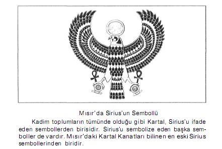
İşte bu nedenle Yunanlılar'ın bu yapılara son derece güzel ve uygun bir isim bulmuş oldukannı rahatlıkla söyleyebiliriz. Günümüzde gözler önünden uzak kalmış, toplum hafızasından silinmiş sırların başında, Sirius Takım Yıldızı'nın dünyamızla olan bağlantısı gelmektedir Bu sırrın üzeri, Tufan sonrası bizim kültürümüzde başlayan .sembolik eğitim sistemine geçişle birlikte örtülmüştür. Bu üstü örtülü sırrın anlaşılabilmesi için dinsel sembolizmin dilini çözmek gerekir Aksi takdirde bu sırra ulaşmak mümkün değildin Bu sır kökeni Tufan Öncesi kültüre dayanan bizim devremizin eski uygarlıklarına ait mitolojik metinlerde de kendisini gizlemektedir. Ezoterik bilgilerini Tufan Öncesi Atlantisliler'den alınış olan eski Mısır rahipleri bu sırrı biliyorlar ve bunu en gizli ve en güçlü ayinlerinde dışa vuruyorlardı. Kuşkusuz ki, bu sırda hiçbir zaman mabetlerin tlııvarlanndan dışarıya sızdırılmamış, inisiyelerce saklı tutulmuştur. O halde bütün buraya kadar üzerinde durduğumuz konulara dayanak, "Büyük Piramidin çok sayıda işlevi mi bulunmuştur" diye sorulacak olursa, buna kesin olarak "evet" cevabı vermemiz gerekmektedir. İsmiyle bile bazı sırları kendisinde barındırmış ve halen de barındırmaya devam etmektedir.
İsimle ilgili bu bölümümüzün sonunda Büyük Piramit'in bir diğer ismi olan "Keops" üzerinde de kısaca durmak istiyorum. Büyük Piramide Keops isminin verilmesi. Klasik Tarih Bilimi'nin verilerini doğru kabul eden bazı arkeologlarca bu yapının M.Ö. 3.500 yılında yapılmış olduğu ön kabulüne dayanır. Bu tarihte Mısır'ın firavunu Keops'tu. O halde Büyük Piramit bu tarihte yapıldıysa, bunu yaptıran da o dönemin firavunu olmalıydı. İşte bu düşünceden hareketle, Büyük Piramit'e firavunun adı atfedilmişdi. Kurulan mantık doğru ama bilgi yanlıştı. Çünkü Büyük Piramit'in yapılış tarihi M.Ö. 3.500 değildi... Bu yapının bu tarihten çok daha öncelerine ait olduğu bugün birçok arkeolog tarafından da kabul edilmiştir Bu nedenle Keops ismi, aslında Büyük Piramit için sadece bir zamanların ön kabulüyle ilgili bir anı olarak kalmış durumdadır.
Konunun bu yönü başka kitaplarda oldukça ayrıntılı olarak ele alınmış olduğu için, ben bunları tekrar etmek istemiyorum. Ama bu konuya hiç değinmeden de geçemezdim... Bu nedenle bu bölümü çok kısa tutmaya çalışacağım. 1900'lü yıllarda birçok kişinin, Büyük Piramit'in kimler tarafından ve ne zaman inşa edildiği konularını irdelediği sırada, Andre Bovis isimli bir Fransız araştırmacı çok ilginç bir şey keşifetti. Piramit'in içindeki odalardan birinde bulunan ölü hayvan ve artıklarının normalden çok farklı bir görüntüye sahip olduklarını farketti... Piramit'in içindeki bir şey sanki bu hayvanların çürümesini geciktirmiş gibi görünüyordu.Fransa'ya döner dönmez Büyük Piramit'in boyutları ile orantılı küçük bir kopyasını inşa ettirdi ve ne olacağını görmek için içine bir et parçası koydu. Aradan günler geçmesine rağmen piramidin dışında tuttuğu et çürüyüp kokuşmasına karşın piramidin içindeki etin suyunun çekildiğini ve sanki mumyalanmışcasına çürüme eğilimi göstermediğini ve hiç bir kokuşmanın ette olmadığını gördü. Böylelikle Piramidal yapının içinde bir enerjinin ortaya çıktığını ilk keşfeden kişi olarak Andre Bovis tarihe geçmiş oldu. 1930 lu yıllarda bu keşfini açıkladığında kendisinin metafizik araştırmalara ilgisinden dolayı zamanın bilimsel çevreleri bunu pek ciddiye almamışlardı. 1940'lı yılllarda Çekoslovakya'da Kari Drbal isimli bir başka araştırmacı piramidin traş bıçağını bileylediğini keşfetti. Ancak bunu bilimsel çevrelere onaylatması tam on yılını aldı. Ne var ki, piramitlerin bu özelliği ile Batı dünyası pek fazla ilgilenmedi. Batı dünyasının ve özellikle de ABD'nin bu konuya olan ilgisi, SSCB'de yapılan Parapsikolojik araştırmalarla ilgili geniş bilgilere yer veren Shelia Ostrander ve Lynn Schroeder'in yayınladığı "Sovyet Rusya'da Fantastik Parapsişik Araştırmalar" isimli kitaptan sonra başlamıştır.Batı dünyası Doğu Bloğu'nun Parapsikoloji ile bu denli yakından ve yoğun olarak ilgilendiğini ilk kez öğrenmiş oluyordu. Shelia Ostrander ve Lynn Schroeder'in yayınladığı kitapta Çekoslovakya'da Piramitler'in enerji odaklama özellikleriyle ilgili yapılan çok sayıda pratik çalışma da tüm ayrıntılarıyla dile getirilmişti. Bu yazarlar ABD'de piramitlerle ilgili yoğun bir merak uyandırdılar.
O günden bu güne kadar ABD'de pekçok araştırmalar yapıldı. Ancak bunların çok az kısmı yayınlandı. Bu konuyla ilgili yapılan yayınların tamamına yakını Avrupa ülkelerine aittir. Piramitlerin odakladığı enerjilerle ilgili günümüze kadar yapılan araştırmalarda elde edilen sonuçları maddeler halinde sıralayacak olursak şunları söyleyebiliriz:
-Bıçak ve Jiletleri biler.
-Etin çürümesini engeller.
-Musluk suyuna kaynak suyu tadı verir.
-Tütün,çay ve kahveyi tatlılaştırır.
-Bitkilerin büyümesini ve tohumların filizlenmesini hızlandırır.
-Besinleri korur , bakterilerin üremesini engeller.
-Su yosunlarının büyümesini geciktirir.
-Pilleri şarj eder.
-TV ve radyo yayınlarının daha iyi alınmasını sağlar.
-Şuuru dinçleştirir ve meditasyon çalışmalarında gevşeme haline geçişi kolaylaştırır.
-İyilisme sürecini kısaltır. Acıyı hafifletir.
-Cinsel gücü arttırır . (lsteği değil.)
-Yorgunluk ve bitkinlik hissini çok kısa bir sürede ortadan kaldırır, canlılık verir.
-Uyku üzerinde de çok pozitif etkileri vardır. Daha az bir süre uyuyarak daha fazla enerji elde etmemizi sağlar.
-Parapsişik yeteneklerin gelişmesine ve su üstüne; çıkmasına yardımcı olur.
Söz konusu etkilerin en yoğun hissedildiği bölge, piramidin üst tepe noktasından tabanma doğru uzatılan doğrunun 1/3'lük birimindedir. Bu da yaklaşık olarak Kral Odası'nın bulunduğu yere denk gelmektedir. Evinde piramitlerin bu etkileriyle ilgili deney yapmak isteyen okurlarımıza son bir hatırlatmada bulunmak istiyorum. Kendiniz tahtadan, taştan hatta kartondan bile piramit yapabilirsiniz. Oransal boyutlarının Büyük Piramit'le tıpa tıp aynı olmasına gerek yoktur. Dikkat etmeniz gereken tek şey: Piramidinizin dış yüzeylerinden birinin mutlaka Manyetik Kuzey yönüne çevrilmiş olmasıdır. Manyetik Kuzey'le Coğrafik Kuzey'in kısmen farklılık gösterdiğini unutmayınız. Manyetik Kuzeyi bir pusula yardımıyla belirleyebilirsiniz.
Piramitler'den sonra Antik Mısır Mimarisi'nin en gizemli yapılarından bir diğeri de yeraltı tüneller ve galeriler sistemleridir. Fakat bu konu diğerine nazaran çok daha az bilinir. Çünkü Piramider devasa boyutlarıyla gökyüzüne yükselirken labirentler yer altında kendilerini gizlemiş durumdadırlar. Atlantisliler'ce Tufan'dan önce başlatılan çalışmalar sonucunda. Mısır çok önemli inisiyatik bir merkez haline getirilmişti. Bu merkezi, yeraltı tüneller ve galeriler sistemleriyle Dünya'nın çeşitli noktalarındaki merkezlere de bağladılar. Ancak yaklaşmakta olan Tufan'dan haberdardılar ve bunun için çeşitli önlemler almaları gerekmekteydi. Bu önlemlerden biri de, bu yeraltı tüneller sistemlerinin sularla kaplanmasına engel olmaktı. Orta Yucatan ve Mısır düz bir araziye sahip olduğu için, buralarda söz konusu amaca yönelik olarak tünellerin içine su dolmasına engel olacak bariyerlere ihtiyaç vardı. İşte bu bariyerlik görevini görmek de piramitlere düşmüştü.Piramitlerin yapılmasının bir diğer nedeni de buydu... Gizli yeraltı merkezlerini su baskınlarından kurtarabilmek...Böylelikle piramitler, bu gizli yeraltı tünellerinin giriş noktalarına yerleştirildi.
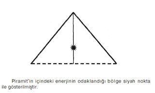
Ezoterik kaynaklarda dile getirilen bu bilgilere benzer sözlere, Herodot'un kayıtlarında da rastlamak mümkündür. Herodot Mısır'la ilgili tuttuğu tarihi kayıtlarında, yeraltında inşa edilmiş olan ve onu bir dünya harikası olarak tanımladığı bir labirentten sözeder. Herodot labirenti bulduğunda, bu muazzam yapının toprak üstünde kalan bölümleri yıkılmış durumdaydı. Labirent'in piramitlerden çok daha görkemli olduğunu belirtmiş ve görebildiği kısmını ayrıntılı bir şekilde tarif etmiştir. Herodot, Labirent'te yarısı yeraltında, öteki yarısı ise yer üstünde bulunan 3000 odaya rastladığından bahseder:
Üst odaları bizzat gezdim ve ayrıntılı olarak inceledim. Binanın bekçileri yeraltı odalarına girmeme izin vermediler. Labirente üzerinde büyük şekiller işlenmiş olan 40 kulaç yüksekliğindeki bir piramidin altındaki muazzam bir yeraltı galerisinden girilerek geçilebiliyordu. Herodot'un "Labirent" dediği bu yeraltı yapısının iyice yıpranmış haldeki kalıntılarının küçük bir kısmı, Gize'nin Güney-Batısı'nda yer alan Fayum yöresinin Güney-Doğu ucunda bulunan Hauwaret el Maqta yakınlarında Arkeologlarca ortaya çıkartılmıştır. Arkeologlar elde ettikleri bulguların, Herodot'un anlattıklarına uyduğunu da açıklamışlardır.
Çok geniş bir alanı kaplayan yeraltı tüneller sistemlerinin ve bunların ana giriş noktalarında inşa edilmiş olan piramitlerin Tufan Öncesi Kültür tarafından gerçekleştirilmiş olduğundan, Ezoterizm'in tanınmış yazarlarından Mme. Blavatsky de bahsetmiştir.
Mme. Blavatsky "Dzyan Kitabı"na ait olduğunu ileri sürdüğü gizli bir kayıttan bahseder. Bu kayıtta şunlar yazılıdır:
"Bilgelik yılanların inleri şimdi üçgen biçimli taşların altındadır. "
Ezoterizm'de Bilgelik Yılanları ya da Yılanoğulları tanımlamaları Galaktik Irka ait gelişmiş kozmik varlıkları ifade eder. Bu varlıkların bir zamanlar yeryüzüyle irtibata girdikleri tüm eski geleneklerde çok açık bir şekilde ifade edilmiştir. Mu ve Atlantis Uygarlıkları da bu ırkın torunlarıdır. Yukarıda sözü edilen üçgen taşlar ise piramitler için kullanılmış bir tanımlamadır. Mme. Blavatsky de bu konu hakkında yaptığı açıklamada bu görüşü desteklemiştir. Dzyan Kitabı'ndan aktardığı kayıt hakkında şunları söyler:
Yukaridaki cümle, bize açıkça anlatmaktadır ki, üç ırkın yani 3. 4. ve 5. Irklar'ın üstatları yani bilgeleri piramitlerin altındaki yeraltı mekânlarında yaşamışlardır.
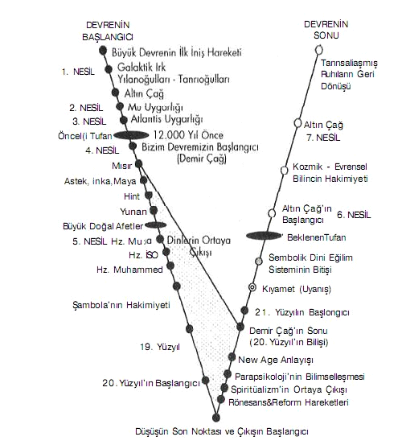İNSANLIĞIN İNİŞ VE ÇIKIŞ SURECI'NDE GEÇİRDİĞİ DEVRELER
Ezoterizm'de sözü edilen 3. 4. ve 5. Irklar Atlantis ve bizim devremize ait uygarlıklara karşılık kullanılmıştır. Şekilden de anlaşıldığı gibi 2. Irk Mu Uygarlığı'na, 1. Irk ise Yılanoğulları ya da Tanrıoğulları olarak ifade edilen Goiaktik Uygarlığa aittir. 6. ve 7. Irk olarak sembolleştirilen süreç ise, çıkışla birlikte yaşanacak döneme ait insanlığı ifade etmektedir.
Gize Piramitleri'nin (Keops, Kefren, Mikerinos) binlerce yıllık bir de bekçisi vardır... Bu bekçiliği yapan aslan bedenli insan başlı Sfenks'tir. Tarih boyunca birçok kez kumlar altında kalan Sfenks, en az piramitler kadar sırrını muhafaza eden Mısır'ın bir diğer bilmecesidir. Sfenks sadece Gize'nin kumları üzerinde yükselen dev piramitlerin değil, bunların yanı sıra kumların altında uzanan yeraltı galerileri ve tüneller sistemlerinin de bekçiliğini yapmış ve yapmaya bugün de devam etmektedir. Bir zamanlar iki ayağının altındaki bir noktadan bu yeraltı galerilerine geçilebiiiyordu. Bugün için bu giriş kapalı bulunmaktadır.
Sfenks ilk kez Batı Dünypası tarafından farkedildiğinde büyük bir bölümü çölün kumlarıyla kaplanmış durumdaydı. Napolyon ve askerleri Sfenks'i ilk kez 18. YY'in başında gördüklerinde, anıtın sadece başı ve omuzları çöl kumlarının üstündeydi. Uzun yıllar boyunca Sfenks bu şekilde kaldı. 1816 - 1818 yılları arasında yapılan titiz kazı çalışmalarıyla bedeninin büyük bir bölümü kum altından çıkartıldı. Ancak pençeleri ile pençelerinin önündeki mabetlerin kum altından çıkartılması farklı zamanlarda gerçekleştirilen sistematik çalışmalarla gerçekleştirildi. Böylelikle 7.3 metre uzunluğunda ve 19.8 metre yüksekliğindeki boyutlarıyla Sfenks yeniden çöl kumlarının üzerinde yükelebildi. Ve o gün bugündür, tüm dünyanın ilgisini üzerinde toplamayı başardı. Sfenks kendi sakladığı sırlar kadar, başka bilinmezliklere de ışık tutmaktadır. Bunlardan biri de dünya tarihini değiştirecek kanıtlara sahip olmasıdır. Bu kanıtlardan biri, aşınmasının nedenlerinde gizlidir. Günümüzde yapılan birçok araştırma Sfenks'teki aşınmanın rüzgar ya da kumdan çok, su nedeniyle olduğunu göstermektedir. Buna ilk dikkatleri çeken araştırmacılardan biri Schvvaller de Lubicz olmuştur. Bir diğer ünlü araştırmacı J.A. West "Serpent in the Sky" isimli kitabında şu görüşlere yer vermiştir:
Prensip olarak Sfenk'in su erozyonuna maruz kaldığına itiraz etmek mümkün değildir. Eski Mısırın köklü iklim değişikliklerine ve dönemsel su ile ilgili felâketlere maruz kaldığı ispatlanmıştır. Bugünkü kronolojik hesaplamalara göre Mısır'da meydana gelen en son su baskım MÖ. 10.000lerde gerçekleşmiştir. Bu son derece önemli bir tespittir. Peki bu bize neyi gösterir? J.A. West, bunu tek bir cümleyle şöyle özetlemiştir:
Sonuçla şunu düşünebiliriz Eğer su tarafından tahrip edilmişse, bu erozyona sebebiyet veren Tufan ya da Tufanlar öncesinde Sfenks'in yapılmış olması gerekir. Evet, J.A. West'in de söylediği gibi Sfenks'in su nedeniyle zarar görmüş olması öncelikle bu yapının Tufan öncesinde yapılmış olduğunu göstennektedir. Çünkü ortaya çıkan tarih, Tufan'ın meydana geldiği tarihe denk gelmektedir. Bu aynı zamanda, Atlantis'in de tarih sahnesinden silindiği tarihtir. Böylelikle ortaya çıkan bu tarihsel veri, Mısır Tarihin'nin de yeni baştan ele alınması gerektiğini bir kez daha göstermektedir. Hatta sadece Mısır Tarihi'ni değil, tüm Dünya Tarihi'ni de...
Bu tarihsel sürece ve Klasik Tarihçiler'in Mısır Uygarlığı'na biçtikleri tarihi geçmişle ilgili çelişkilere tekrar geri döneceğiz; şimdi bu konuyu burada bırakarak, Sfenks'in kendisinde barındırdığı diğer bilinmezliklere kısaca göz atalım...
Şekilsel Sırları
Nasıl ki piramitler şekilsel olarak belirli bir anlam taşımaktaysalar, aslan gövdeli insan başlı görünümünde olan Sfenks de, şekliyle ezoterik anlamları kendisinde barındırır. Önce Aslan Sembolü'nü açalım, sonra da niçin insan başlıdır bunu görelim...
EZOTERİZME GÖRE ASLAN NEYİN SEMBOLÜDÜR?
Eski uygarlıkların mitolojilerinde ve geleneklerinde sıklıkla kullanılmış olan "Aslan Sembolü" öncelikle güç ve cesaretin sembolü olarak karşımıza çıkar. Bu anlamı bugün için de kullanılmaktadır. Ancak ezoterizmdeki anlamı çok farklıdır. Ezoterik olarak birbiri içine gizlenmiş birden fazla anlama sahiptir. En gene! manasıyla, "İlâhi İrade "yi sembolize eder. Ancak hepsi bununla kısıtlı değildir. Biraz daha ayrıntıya girelim...
"Aslan Sembolü" hemen hemen her yerde "Güneş Sembolü" ile birlikte kullanılmıştır. Bunu Aslan heykellerinin ya da resimlerinin üzerlerine işlenmiş yıldızlardan anlamak mümkündür. Birbirlerinden hayli uzak bölgelerde varlığını sürdüren farklı inisiyatik kültürlere ait aslan sembollerinin yıldızlarla süslenmiş olduğu görülmektedir. Örneğin Mısır ve Mitra Kültleri'nde önemli bir yer tutan aslan sembollerinde de durum aynıdır. (Bkz: Şekil A ve Şekil B)
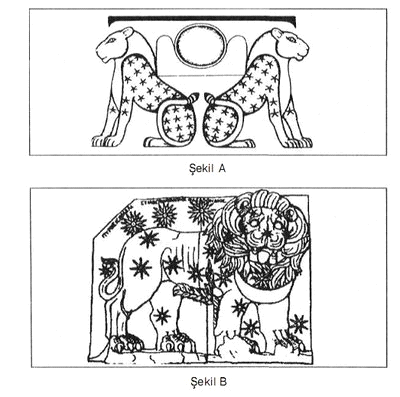
Şekil A'daki Mısır Kültürü'ne ait îkiz Aslanlar'ın üstleri yıldızlarla süslenmiş durumdadır. İki aslanın tam ortasında bulunan güneş kursu soldan ve sağdan iki yarım yay çizerek aslanların sırtlarına yaslanmıştır.
Şekil B'deki Mitra înisiyasyonu'na ait Nemrut Dağı heykellerinden olan aslan sembolü de aynı temaları içerir.
Her iki aslan sembolünde de ortak tema yıldızlardır. Yani Güneşler...
Mitra İnisiyasyonu'na ait aslan sembolünün en üst kısmında bulunan üç yıldızın diğerlerinden daha ayrıcalıklı olarak çizilmiş olduğuna dikkatlerinizi çekmek istiyorum. Bu üç yıldızın hem diğerlerinden daha büyük olarak çizilmiş olduğunu hem de diğerlerine oranla daha fazla ışın saçmakta olduğu görülmektedir. Bu yıldızlar üçlü bir yıldız olan Sirius A, Sirius B ve Sirius C'nin sembolleridir. Ayrıca kabartmada tüm bu konuları birbirleriyle baglantılandıran bir başka sembol daha vardır. Bu da aslanın göğsüne yerleştirilmiş olan yay sembolüdür.Yay'ın, Ezoterizm'de göklerin hakimiyetinin sembolü olduğu hatırlanacak olursa sembollerin ne kadar birbirleriyle uyum içinde kullanılmış olduğu sanırım çok daha iyi anlaşılacaktır.
Bilindiği üzere "Ezoterik Dünya Tarihi" Tufan'dan sonraki bizim devremizin başlangıcı olarak M.Ö. 10.950 tarihini göstermektedir. Atlantis'in tarih sahnesinden silindiği bu tarih, "Astrolojik Çağlar"da "Aslan Burcu'na denk gelmektedir. İşte Sfenks'in aslan vücudu aynı zamanda bu anıyı da günümüze taşımaktadır. Yani hem Atlantis'in batışını hem de bizim devremizin başlangıcını bu şekilde üstü kapalı bir şekilde dile getirmektedir.Peki ama vücudu aslan olan bu mimari yapının başı neden aslan değil de bir insan başı şeklindedir?
Günümüze bir kehanet...
Sfenks'in başının insan, vücudunun ise aslan olması öncelikle bir dönüşümün sembolüdür. Vücudu farklı, başı farklı canlılar mitolojik bir anlatım üslubu olarak çeşitli ulusların efsanelerinde yer almıştır. Deniz kızı bunlardan biridir. Dönüşümden kasıt burada insanla aslan arasındadır. Bu dönüşümü Ezoterizm "insanlaşan aslanlar" olarak tanımlar. Yani bilgelikten uzaklaşan bizim devremizin insanları burada anlatılmak istenmektedir. Daha önceki yayınlarımızda ayrıntılarıyla üzerinde durduğumuz, insanlığın aşağıya inişi bu sembolün içinde gizlenmiş durumdadır. Sfens bu haliyle bizim devremizin hemen başında henüz bu dönüşümün ilk başlangıcını ifade eder. Yani henüz sırların tamamen unutulmadığı dönemi. Ancak sembolün içindeki gizli mesaj bununla kısıtlı değildir. Başının insan fakat vücudunun aslan olması iki ayrı anlama sahiptir. Burada hem geçmişe hem de geleceğe ait bir mesaj gizlidir. Bir zamanlar aslanla sembolize edilen bilgeliğin bir gün yeniden dünya üzerinde yaşanacağı yani "insanların aslanlaşacağı" da burada anlatılmak istenmektedir. Bu özelliğiyle geleceğe ait bir kehaneti de gündeme getirmektedir. Sfenks binlerce yıl öncesinin hem bir anısını, hem de binlerce yıl öncesinin bir kehanetini günümüze kadar sessiz bir şekilde taşımıştır. Sfenks bu kehanetinde şu sözleri fısıldamaktadır:
"Bir zamanlar kaybolan bilgelik bir gün yeniden ortaya çıkacak ve insanlar aslalaşacaktır. "
İnsanlığın fiziksel ve ruhsal açıdan aşamalı olarak aşağıya iniş sürecinin belli bir noktada dip yaptıktan sonra yeniden bir tırmanışa geçeceğini ve bunun da Kova Çağı'nda meydana geleceğini söyleyen ezoterik kayıtlarla, tüm bu anlattıklarımız birebir örtüşmektedir. Astrolojik Çağlar'ı gösteren çizelgemize bakarsanız, Aslan Çağı'nm tam karşıtı olan çağın Kova Çağı olduğunu derhal farkedersiniz. Eski gelenekler bu geçişin tam tarihi olarak 2012 yılını vermektedir. Aynı tarihe bu çizelgede de ulaşılmaktadır. Bu tarihle ilgili birçok kehanet vardır. Bu kehanetlerden bazılarına göre, söz konusu tarih, aynı zamanda Atlantis'e ait çok önemli belgelerin, gün ışığına çıkacağının da tarihidir.
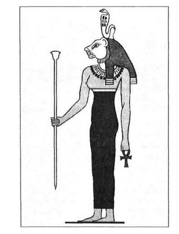
Mısır'da "Aslan İnsanlar" ve "Aslanlaşan insanlar" bu şekilde sembolleştirilmişti. Sembolün başı üzerine resmedilen yılan, 'Aslan İnsan"ın kökenini ve bilgeliğini göstermektedir. Aslan ve yılan birbirlerini tamamlayıcı semboller olarak kullanılmıştır. Böylelikle "Aslan İnsan Sembolü"nün aynı zamanda Galaktik Irk'ın da sembolü olduğu anlatılmış olmaktadır. Piramitlerin binlerce yıllık bekçisi belli ki sadece piramitleri beklememiş, büyük bir sırrın da bekçiliğini yaparak bu sırrın günümüze kadar gelebilmesini sağlamıştır. Bunu bugün daha iyi anlıyoruz. Yakın gelecekte ise zaten herkes anlayacak!...
Anıtkabire giden ve "Aslanlı Yol" olarak isimlendirilmiş olan yolun her iki kenannı süsleyen Aslan heykelleri, bu anlamlarından hangisi için seçilmiştir bunu bilemiyorum. Ama hangi anlamı için kullanılmış olursa olsun, hepsi bu yolun sonunda yatan yüce vazifelinin misyonuna uymaktadır.